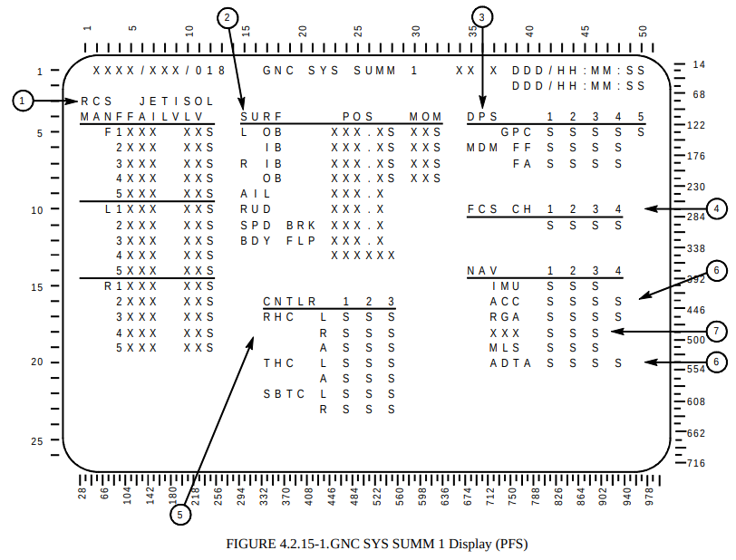

D INCLUDE TEMPLATE"
Compiler DirectiveD INCLUDE" Compiler DirectiveD
INCLUDE SDF" Compiler DirectiveThe principal claim to fame of the HAL/S computer language is
that the bulk of the flight software for the Space Shuttle was
written in it, as supplemented by source code in the assembly
language of the Shuttle's General Purpose Computers (GPC).
GPCs were IBM AP-101S computers or (for early missions) IBM
AP-101B computers. HAL/S also seems to have been used for
the flight software of the Galileo
probe, though in that case the onboard computers were based
on RCA 1802 COSMAC
microprocessors.
Aside: The other claim to fame is that HAL/S has an optional pseudo-mathematical notation in which arithmetical expressions look a bit more like mathematical formulas as traditionally printed than they generally do in other programming languages. This more-traditional appearance supposedly eased program readability.
HAL/S was devised by the company Intermetrics, Inc.,
and touted as one of the "standard" languages in which NASA flight
software should be written. In spite of the two successes I
mentioned above, I haven't found much evidence that it ever became
a NASA standard. Indeed, a
1983 report that investigated the language candidates HAL/S
versus ADA versus Modula 2 concluded that only ADA met all of the
desired criteria. Today, with sympathetic apologies to the
folks who developed it (and using it) back in the day, I'd regard
HAL/S as a dead language, though I'd be happy to be instructed
otherwise.
One factor greatly in its favor, both as a language for flight
software and for general-purpose computing, is a very fine book
about the language, namely Michael Ryer's Programming
in HAL/S. That may sound like an odd advantage
to mention, but "very fine books about them" are something that
computer languages with a minimal user base tend to lack.
Authors have more incentive to spend their time writing about
widely-successful languages with large numbers of users.
Nevertheless, the Space Shuttle's flight software was
written in HAL/S, so anybody interested in working with that
flight software, even if only as a self-enrichment pastime, also
needs appropriate development tools for working with HAL/S.
The Space Shuttle's flight software came in two very-different
flavors, namely the primary flight software (PFS, but
more-commonly even if more-loosely referred to as PASS) and the backup
flight software (BFS), with the BFS being basically a clean-room
implementation of a subset of PASS functionality. By
emphasizing PASS and BFS I don't mean to disparage Galileo's
software. However, I have seen no Galileo flight software,
and as far as I know right now have no prospect for ever getting
my hands on it. If you have Galileo flight software source
code, or even related documentation, by all means contact
me. I'll expand the scope of my HAL/S efforts quicker than
you can bat an eyelash.
A 1981
article summarizes the HAL/S activity up to that point in
time, describing 16 implementations of HAL/S compilers and
cross-compilers for various combinations of host- and
target-computers. None of those host- or
target-computers are (or even were, I suppose) available
for computers accessible to the general public. In
particular, the so-called "IBM PC" is not on the list. The
IBM PC didn't even become available until 1981 anyway, and (as I
can tell you from personal experience) the personal computers
available prior to that were literally sneered at as toys by the
mass of mainframe computer users who hadn't the vision to even
consider the possibility that widely-available low-cost computers
available to everybody might largely supplant the giant mainframes
upon which their careers depended. But time ticks on,
obviously, and if normal peons such as myself want to use HAL/S
today, we need HAL/S development tools that run on the computers
actually available to us. Which is to say, on Linux, Mac OS,
or Windows computers. (Or on hand-held devices, though I
confess that it's hard to envisage working with HAL/S software on
a cellphone!)
My initial iteration of a solution to this problem was to develop
a Linux/Mac/Windows based HAL/S compiler which could translate
HAL/S source code into a language I called PALMAT, for which I
also had an emulator. The compiler and emulator could
optionally be combined into a HAL/S interpreter, into which the
user could input HAL/S statements and immediately see the result
of executing that statement. I called this software yaHAL-S-FC.
The software functions pretty well, though it never reached the
point of implementing 100% of HAL/S's features, nor of being
extremely polished for user friendliness. I halted work on
it mainly because the effort of extending it to 100% functionality
seemed to be expanding rather than contracting. But it could
be useful as an interactive learning aid for those who (for
example) are working their way through Ryer's book. The
software remains available in the Virtual AGC software
repository, and is the subject of two of our pages, one
about the
compiler itself and one about the interpreter alone. I
will not mention it again here.
The HAL/S development tools we focus on here are:
The list above can be regarded a roadmap for development of the
development tools.
The HAL/S compiler, which I will refer to as HALSFC, is
based on the
source code for the original Intermetrics HAL/S compiler called
HAL/S-FC. Intermetrics actually had three separate
HAL/S compilers that I know about:
Aside: The surviving documentation is almost silent on the subject of having separate compilers for PASS vs BFS, but here's my understanding of what happened:
And if all of that weren't enough for you, the structure of
HAL/S-FC, in either the PASS or BFS version, is actually more
complex than I may have implied. In fact, HAL/S-FC was not
just one program, but rather seven stand-alone "passes", some of
them optional, that were run in succession to perform the full
compilation:
| Description |
HAL/S-FC |
HAL/S-BFC |
|---|---|---|
| Cross-compile HAL/S source code to HALMAT
intermediate language |
PASS1 |
PASS1B |
| Produce some optional reports about the
HALMAT. Sometimes called "FLOWGEN" |
FLO |
|
| Optimize the HALMAT representation |
OPT |
OPTB |
| Optimize it some more! |
AUX |
|
| Cross-compile the HALMAT intermediate language to AP-101S object code | PASS2 |
PASS2B |
| Produce optional Simulation Data Files (SDF) |
PASS3 |
PASS3B |
| Print optional reports about the SDF |
PASS4 |
|
Aside: At present, the modern implementations of PASS4 has not yet been created, though as you can see from the table above, it's not needed merely for compilation of object code.And to pile misery atop misery, Microsoft Windows reserves the name "AUX" in a way that makes it extremely difficult to use as the name of a file or a directory. That includes variations like AUX.exe as well. So to save ourselves a world of grief, even if not working on Windows, the AUX pass of the compiler is henceforth referred to as AUXP.
Aside: Probably, you're beginning to see a truly explosive confusion of usages of the word "pass". For one thing, there are 7 passes of the compiler, some of which are named PASSx and some of which are not. But meanwhile, "PASS" is also the name of the primary flight software! Worse, as explained below in the glossary, the correct acronym for the primary flight software was actually "PFS" rather than "PASS", but the term "PASS" became deeply entrenched while the official acroynym "PFS" became mostly disused in the everyday language of the original developers. For compiler passes, Intermetrics somewhat-interchangeably used the following alternate terminology, which is less confusing, and I may use it from time to time as well:
- The term "Phase 1" corresponds to PASS1 of the compiler. It is where HAL/S source code is parsed.
- The term "Phase 1.5" corresponds to FLO, OPT, and AUX of the compiler. It is where optimization occurs.
- The term "Phase 2" corresponds to PASS2 of the compiler. It is where object-code generation occurs.
- The term "Phase 3" corresponds to PASS3 of the compiler. It is where diagnostic and simulation data (i.e., Simulation Data Files, AKA SDF) is produced.
- The term "Phase 4" corresponds to PASS4 of the compiler. It dumps Simulation Data File (SDF) contents for debugging purposes.
The original Intermetrics compilers, HAL/S-FC and HAL/S-360, were
written in a high-level computer language I call XPL/I, with some
"inline" IBM 360 machine code. The original developers, and
other online references you'll see, refer to it simply as
"XPL". But I regard that as confusing and inaccurate, hence
my insistence on the term XPL/I instead. In order to create
our modern HAL/S compiler, HALSFC, I first had to write an
XPL/I compiler that I call XCOM-I, and then use XCOM-I
to compile Intermetrics's source code for HAL/S-FC. There's a separate page
dedicated to the XPL/I language and to XCOM-I.
Neither topic will be mentioned further here, except in
passing.
Aside: I intended the suffix "/I" in "XPL/I" to stand for "Intermetrics". But it happens that the special-purpose language XPL is a dialect of the general-purpose computer language PL/I, so it's also possible to read "XPL/I" as being "PL/I" with a prefix of "X". This pun is entirely unintentional on my part, and I didn't even notice it for several years afterward, but I have to say I do like it!
Also of note: Prior to the very-painful
decision to create XCOM-I, I had made a similarly-painful
decision to manually port the source code for PASS1/PASS1B of
HAL/S-FC into the Python 3 language. The result was a
working version of PASS1/PASS1B that I call HAL_S_FC.
This Python port remains very useful for cross-checking HALSFC,
though it's no longer intended to be run directly by
developers. I've created no separate documentation for it
beyond what's covered on the XCOM-I page, though I'll have
some occasion below to mention it further.
As compiled by XCOM-I, the various passes of HAL/S-FC
actually have filenames like HALSFC-PASS1[.exe] or
HALSFC-OPTB[.exe].
I know that all of this probably seems very complex, and perhaps
overly so. I sympathize! Fortunately for actual use, HALSFC
has been designed to hide almost all of the internal complexity
from the developer. So I hope that in practice you'll find
operation of HALSFC to be more simple to use than the
explanation so far implies.
As I've mentioned, the many pieces of the modern HAL/S compiler are referred to by the blanket name HALSFC, and HALSFC is the only program you need to invoke to compile a HAL/S program into IBM AP-101S object code.
Let's just briefly examine how to use HALSFC. Since
we haven't yet covered how to install the program — that's covered
in the next section! — you can't actually try out the
commands I show you yet, but you can come back after installation
and try them. Installation, unfortunately, does have some
complexity associated with it, and I'd prefer to encourage you
with the simplicity first, before discouraging you with the
complexity. Besides, having a clear idea of what HALSFC
can do and what it cannot do at present may help you to decide
whether you want to install it at all.
DEBUG ¢D¢E¢F
HELLO: PROGRAM;
DECLARE I INTEGER;
DECLARE MY_NAME CHARACTER(20) INITIAL('RON BURKEY');
DECLARE INTEGER, J;
REPLACE PRINTER BY "6";
WRITE(PRINTER) 'THE BEGINNING';
DO FOR I = 1 TO 5;
WRITE(PRINTER) I, 'HELLO, WORLD!';
DO FOR J = 2 TO 8 BY 2;
WRITE(PRINTER) J, MY_NAME, 'SAYS ISN''T THIS FUN?';
END;
END;
WRITE(6) 'THE END';
CLOSE HELLO;
What this program does isn't important, though most of it is just
silliness that's probably obvious at a glance. And other
than the first line, the rest is easily understood by consulting
Ryer's book. The first line is an example of a compiler
directive, which in this case is specific to the Intermetrics
implementation — so Ryer's book won't tell you anything about it —
and just affects what items appear in the compiler's
printouts. I've altered the background color of this snippet
of code to call attention to the fact that compiler directives
begin in column 1, whereas all code begins or beyond column 2.
HALSFC itself is actually a Python script that compiles a
single HAL/S source-code file. (Or more accurately, it's
two scripts, in that it's really hard to run a Python
program from the command line in Windows, so there's an additional
batch script called HALSFC.bat that manages the bookkeeping
details of running HALSFC proper. But that's
essentially transparent to you, so you can now forget that I told
you about it!)
Actually,HALSFC [OPTIONS] SOURCEFILE.hal
SOURCEFILE.hal
can come after the OPTIONS,
before them, or in the midst of them. The order is
insignificant. We'll cover the available OPTIONS later, but some
of the more-significant that it's worth knowing about immediately
are:--test causes a
validity check to be performed on the results of the compilation
... or more accurately, it comparison-tests the two available
implementations of the PASS1 of the HAL/S compiler. The
test is to compile the source file twice, once with HALSFC
and once with HAL_S_FC (as mentioned above), and then to
extensively compare the results. We have no means at
present to test subsequent passes of the compiler.--parms="PARAMETERS"
specifies the "PARM field" covered in the section on compiler options. For
example, it might look like --parms="SRN,LIST,LISTING2,X6,NOTABLES".
-o OBJECTFILE
causes the output object-code file, by default "cards.bin" to be
duplicated with the name OBJECTFILE.Let's just try compiling HELLO.hal:
HALSFC HELLO.hal --parms="LIST"
After a short period of time we're told:
Compilation successful. Results in "HALSFC HELLO.hal 2026-03-05 07-15-57.results".
Or whatever your actual date and time is!
Our directory now contains both the HELLO.hal we started with,
but also a lot of output files generated by the compiler,
including a sub-directory called something like "HALSFC HELLO.hal
2026-03-05 07-15-57.results" that contains not only those
files, but a lot more besides. Ouch! What's
going on? Well, the extra files that are retained in your
current working directory are all of the files generated by the
compiler that I personally have found to be of immediate interest,
and therefore that I suppose you might find of use as well:
e.g., reports by the various passes (covered later) of the
compiler, files needed for examining or emulating program
execution using HALMAT (covered later), the AP-101S object file
itself, and so on. What about the big "HALSFC ...".results
directory? Well, that contains every file generated
by the compiler, not just the ones I claim are "immediately
interesting". A lot of these are covered later on.
Every time you run HALSFC, a new "HALSFC ...".results
directory is created.
As a convenience, if your operating system allows it, you'll also
find some symbolic links to the results directories of recent HALSFC
runs, so that if you do want to access the files in them,you don't
have to keep typing awful directory names ("HALSFC ...".results)
that are continuously changing:
I'm told that some operating systems — I'm looking at you,
Microsoft Windows — don't allow programs like HALSFC
without administrative privileges to create these links, so ...
too bad, Windows users.
Aside: Why maintain all of those extra files, and not just discard them? Perhaps one glorious day, when HALSFC is so mature that we have great confidence that it's 100% reliable, we'll do just that. As for today, though, it's not. And if we want to compile a complex HAL/S program that may consist of hundreds of source-code files (such as actual Shuttle flight software) I feel that it's a good idea to keep the compiler-generated files around to diagnose problems that are encountered. With that said, at present not everyone — by which I mean "no one" — has the same use-case for HALSFC that I do, and this arrangement for managing the files generated by HALSFC is not pleasing to everyone. To be honest, it's not very pleasing to me, either. So here are some things that may help you to manage the situation more to your liking:
- HALSFC's command-line option
--cleancauses all of the generated files (with some exceptions) to be cleared from the working directory and thus to be preserved only in the *.results directories. (The exceptions are the files for the template library and the include library both of which are covered later: TEMPLIB[B]/, TEMPLIB[B].json, INCLIB[B]/, and INCLIB[B].json. These are needed if you perform a series of HALSFC runs for related HAL/S files that together comprise a complete program, and so not having them would limit you to programs that are completely contained in a single HAL/S source-code file. If you are just experimenting with simple uses of HAL/S, one file at a time, you won't have these anyway.)
- HALSFC's command-line option
--archivecauses all of the "HALSFC ...".results directories to be stored in a directory called archive.results/ rather than directly in the current working directory.
Of the files which are likely to be interesting, the one we usually look at first is the report (pass1.rpt) created by the "phase 1" compiler pass, which is where our HAL/S source code is parsed, and in which most or all errors will have been detected. Here's what that report looks like:
HAL/S REL32V0 T I T A N S Y S T E M S C O R P . AUGUST 8, 2024 12:51:35.21 PAGE 1
HAL/S COMPILER PHASE 1 -- VERSION OF AUGUST 8, 2024. CLOCK TIME = 4:31:2.00.
TODAY IS AUGUST 8, 2024. CLOCK TIME = 12:51:35.21.
PARM FIELD: LIST
COMPLETE LIST OF COMPILE-TIME OPTIONS IN EFFECT
*** TYPE 1 OPTIONS ***
NOADDRS
NODECK
NODUMP
NOHALMAT
NOHIGHOPT
LFXI
LIST
NOLISTING2
MICROCODE
NOREGOPT
NOSDL
NOSREF
NOSRN
NOTABDMP
TABLES
NOTABLST
NOTEMPLATE
NOVARSYM
ZCON
*** TYPE 2 OPTIONS ***
BLOCKSUM = 400
CARDTYPE =
COMPUNIT = 0
DSR = 1
LABELSIZE = 1200
LINECT = 59
LITSTRINGS = 2000
MACROSIZE = 500
MFID =
PAGES = 2500
SYMBOLS = 200
TITLE =
XREFSIZE = 2000
*** NO LANGUAGE SUBSET IN EFFECT ***
------------------------------------------------------------------------------------------------------------------------------------------------------
HAL/S REL32V0 T I T A N S Y S T E M S C O R P . AUGUST 8, 2024 12:51:35.21 PAGE 2
STMT SOURCE REVISION
D| EBUG `D`E`F |
------------------------------------------------------------------------------------------------------------------------------------------------------
HAL/S REL32V0 T I T A N S Y S T E M S C O R P . AUGUST 8, 2024 12:51:35.21 PAGE 3
STMT SOURCE CURRENT SCOPE
1 M| HELLO: |HELLO
1 M| PROGRAM; |HELLO
2 M| DECLARE I INTEGER; |HELLO
3 M| DECLARE MY_NAME CHARACTER(20) INITIAL('RON BURKEY'); |HELLO
4 M| DECLARE INTEGER, J; |HELLO
5 M| REPLACE PRINTER BY "6"; |HELLO
6 M| WRITE(PRINTER) 'THE BEGINNING'; |HELLO
^^^^^^^
7 M| DO FOR I = 1 TO 5; |HELLO
8 M| 1 WRITE(PRINTER) I, 'HELLO, WORLD!'; |HELLO
^^^^^^^
9 M| 1 DO FOR J = 2 TO 8 BY 2; |HELLO
E| , |
10 M| 2 WRITE(PRINTER) J, MY_NAME, 'SAYS ISN''T THIS FUN?'; |HELLO
^^^^^^^
11 M| 1 END; |ST#9
12 M| END; |ST#7
13 M| WRITE(6) 'THE END'; |HELLO
14 M| CLOSE HELLO; |HELLO
------------------------------------------------------------------------------------------------------------------------------------------------------
HAL/S REL32V0 T I T A N S Y S T E M S C O R P . AUGUST 8, 2024 12:51:35.21 PAGE 4
**** C O M P I L A T I O N L A Y O U T ****
HELLO: PROGRAM;
------------------------------------------------------------------------------------------------------------------------------------------------------
HAL/S REL32V0 T I T A N S Y S T E M S C O R P . AUGUST 8, 2024 12:51:35.21 PAGE 5
S Y M B O L & C R O S S R E F E R E N C E T A B L E L I S T I N G :
(CROSS REFERENCE FLAG KEY: 4 = ASSIGNMENT, 2 = REFERENCE, 1 = SUBSCRIPT USE, 0 = DEFINITION)
DCL NAME TYPE ATTRIBUTES & CROSS REFERENCE
1 HELLO PROGRAM FLAGS=20040, NEST=0, SCOPE=1, PTR=2, LENGTH=0, LINK1=-1, LINK2=0, SYT_NO=1,
ARRAY=-8192, ADDR=0, CLASS=2, TYPE=73 XREF: 0 0001
2 I INTEGER SINGLE, ALIGNED, STATIC, FLAGS=808208, NEST=1, SCOPE=1, PTR=0, LENGTH=0,
LINK1=0, LINK2=0, SYT_NO=2, ARRAY=0, ADDR=0, CLASS=1, TYPE=6 XREF: 0 0002
4 0007 2 0008
3 MY_NAME CHARACTER(20) ALIGNED, STATIC, INITIAL, FLAGS=8A08, NEST=1, SCOPE=1, PTR=0, LENGTH=20,
LINK1=0, LINK2=0, SYT_NO=3, ARRAY=0, ADDR=0, CLASS=1, TYPE=2 XREF: 0 0003
2 0010
4 J INTEGER SINGLE, ALIGNED, STATIC, FLAGS=808208, NEST=1, SCOPE=1, PTR=0, LENGTH=0,
LINK1=0, LINK2=0, SYT_NO=4, ARRAY=0, ADDR=0, CLASS=1, TYPE=6 XREF: 0 0004
4 0009 2 0010
5 PRINTER REPLACE MACRO FLAGS=C000, NEST=1, SCOPE=1, PTR=0, LENGTH=0, LINK1=0, LINK2=0, SYT_NO=5,
ARRAY=0, ADDR=0, CLASS=6, TYPE=0, MACRO TEXT="6" XREF: 0 0005 2 0006 2 0008
2 0010
L I T E R A L T A B L E D U M P:
LOC TYPE LITERAL
1 ARITH 4214000000000000
2 CHAR RON BURKEY
3 ARITH 4160000000000000
4 CHAR THE BEGINNING
5 ARITH 4110000000000000
6 ARITH 4150000000000000
7 ARITH 4160000000000000
8 CHAR HELLO, WORLD!
9 ARITH 4120000000000000
10 ARITH 4180000000000000
11 ARITH 4120000000000000
12 ARITH 4160000000000000
13 CHAR SAYS ISN'T THIS FUN?
14 ARITH 4160000000000000
15 CHAR THE END
------------------------------------------------------------------------------------------------------------------------------------------------------
HAL/S REL32V0 T I T A N S Y S T E M S C O R P . AUGUST 8, 2024 12:51:35.21 PAGE 6
OPTIONAL TABLE SIZES
NAME REQUESTED USED
^^^^ ^^^^^^^^^ ^^^^
LITSTRINGS 2000 68
SYMBOLS 200 5
MACROSIZE 500 2
XREFSIZE 2000 13
BLOCKSUM 400 0
CALLS TO SCAN = 85
CALLS TO IDENTIFY = 14
NUMBER OF REDUCTIONS = 202
MAX STACK SIZE = 9
MAX IND. STACK SIZE = 5
END IND. STACK SIZE = 1
END ARRAY STACK SIZE = 0
MAX EXT_ARRAY INDEX = 1
STATEMENT COUNT = 14
MINOR COMPACTIFIES = 0
MAJOR COMPACTIFIES = 0
REALLOCATIONS = 0
MAX NESTING DEPTH = 1
FREE STRING AREA = 16620316
END OF HAL/S PHASE 1, AUGUST 8, 2024. CLOCK TIME = 12:51:35.22.
17 CARDS WERE PROCESSED.
NO ERRORS WERE DETECTED DURING PHASE 1 .
NUMBER OF FILE 6 LOCATES = 1
NUMBER OF FILE 6 READS = 0
NUMBER OF FILE 6 WRITES = 0
TOTAL CPU TIME FOR PHASE 1 0:0:0.02.
CPU TIME FOR PHASE 1 SET UP 0:0:0.01.
CPU TIME FOR PHASE 1 PROCESSING 0:0:0.00.
CPU TIME FOR PHASE 1 CLEAN UP 0:0:0.01.
There's lots of information here, though the most-significant
thing is probably the message "NO ERRORS WERE DETECTED DURING
PHASE 1". What phase 1 (PASS1) has accomplished is mostly to
output a processed form of our HAL/S program as expressed in an
"intermediate language" called HALMAT. Unfortunately, most
of the documentation about HALMAT has not survived, so this file
is only partially comprehensible, but since the additional passes
of the compiler do understand HALMAT, we don't necessarily
need to understand it ourselves. The HALMAT form of the
program is the file halmat.bin. Note: In an
unaccustomed burst of energy, I did create a script called unHALMAT.py
that parse a HALMAT file, à la "unHALMAT.py halmat.bin",
though the extent to which the result is informative is
questionable. But there will be more discussion of HALMAT
later on, if that's something that seems interesting to you.
After phase 1, the compiler then proceeded to further process
halmat.bin, using the "phase 1.5" programs (FLO, OPT, and
AUXP). Those programs don't usually produce useful
reports, at least not by default. However, what they do is
to "optimize" the HALMAT, producing new HALMAT-related files
called optmat.bin and auxmat.bin. Note:
optmat.bin is a valid HALMAT file, and can be parsed with
unHALMAT.py; auxmat.bin is not, and cannot.
The "phase 2" program (PASS2) then pulls in
all of those HALMAT and HALMAT-related files, and generates
AP-101S object code from them. Let's look at PASS2's report,
pass2.rpt:
PAGE 1
HAL/S COMPILER PHASE 2 -- VERSION OF AUGUST 8, 2024. CLOCK TIME = 4:32:17.00
HAL/S PHASE 2 ENTERED AUGUST 8, 2024. CLOCK TIME = 12:51:35.64
------------------------------------------------------------------------------------------------------------------------------------------------------
PAGE 2
SYMBOL TYPE ID ADDR LEN(HEX) LEN(DEC) BLOCK NAME
$0HELLO SD 0001 000000 000040 64 HELLO
#EHELLO SD 0002 000000 000006 6
#DHELLO SD 0003 000000 000033 51
@0HELLO ER 0004
#QIOINIT ER 0005
#QCOUT ER 0006
#QHOUT ER 0007
------------------------------------------------------------------------------------------------------------------------------------------------------
PAGE 3
LOC CODE EFFAD LABEL INSN OPERANDS SYMBOLIC OPERAND
0000000 ST#1 EQU *
00000 #EHELLO CSECT ESDID= 0002
00000 0000 DC X'0000'
00001 0000 DC X'0000'
00002 00000700 DC A'00000700' #DHELLO
00004 0000 DC X'0000'
00005 0000 DC X'0000'
00000 $0HELLO CSECT ESDID= 0001
0000000 HELLO EQU *
00000 E8F3 0000 LHI R0,0() @0HELLO
00002 E9F3 0000 LHI R1,0() #DHELLO
00004 B914 0005 STH R1,5(R0)
00005 E0FB 0014 IAL R0,20()
00007 EB11 0004 LA R3,4(R1)
00008 BB24 0009 STH R3,9(R0)
0000009 ST#2 EQU *
0000009 ST#3 EQU *
00009 #DHELLO CSECT ESDID= 0003
00009 000008 ORG *-1
00008 140A524F DC X'140A524F'
0000A 4E204255 DC X'4E204255'
0000C 524B4559 DC X'524B4559'
000000E ST#4 EQU *
000000E ST#5 EQU *
000000E ST#6 EQU *
00009 $0HELLO CSECT ESDID= 0001
00009 BEE8 LFXI R6,6
0000A BDE5 LFXI R5,3
0000B D0FF 3800 SCAL@# R0,0(R1,R3) #QIOINIT
0000D EAAD 002B LA R2,43(R1) C'THE BEGINNING'
0000E D0FF 3800 SCAL@# R0,0(R1,R3) #QCOUT
0000010 ST#7 EQU *
00010 BFE3 LFXI R7,1
00011 DF84 0033 BCF 7,*+34 B LBL#3 (WITHIN ST#12)
0000012 LBL#4 EQU *
0000012 ST#8 EQU *
00012 BEE8 LFXI R6,6
00013 BDE5 LFXI R5,3
00014 D0FF 3800 SCAL@# R0,0(R1,R3) #QIOINIT
00016 1DE7 LR R5,R7
00017 D0FF 3800 SCAL@# R0,0(R1,R3) #QHOUT
00019 EA8D 0023 LA R2,35(R1) C'HELLO, WORLD!'
0001A D0FF 3800 SCAL@# R0,0(R1,R3) #QCOUT
000001C ST#9 EQU *
0001C BCE4 LFXI R4,2
0001D DF3C 002D BCF 7,*+16 B LBL#5 (WITHIN ST#11)
000001E LBL#6 EQU *
000001E ST#10 EQU *
0001E BEE8 LFXI R6,6
0001F BDE5 LFXI R5,3
00020 D0FF 3800 SCAL@# R0,0(R1,R3) #QIOINIT
00022 1DE4 LR R5,R4
00023 D0FF 3800 SCAL@# R0,0(R1,R3) #QHOUT
00025 EA21 0008 LA R2,8(R1) MY_NAME
00026 D0FF 3800 SCAL@# R0,0(R1,R3) #QCOUT
------------------------------------------------------------------------------------------------------------------------------------------------------
PAGE 4
LOC CODE EFFAD LABEL INSN OPERANDS SYMBOLIC OPERAND
00028 EA61 0018 LA R2,24(R1) C'SAYS ISN'T THIS FUN?'
00029 D0FF 3800 SCAL@# R0,0(R1,R3) #QCOUT
000002B ST#11 EQU *
0002B BCE4 LFXI R4,2
0002C 840F 0007 AH R4,3(R3) J
000002D LBL#5 EQU *
0002D BC0F 0007 STH R4,3(R3) J
0002E B5E4 0008 CHI R4,8
00030 DE4E 001E BCB 6,*-18 BLE LBL#6 (WITHIN ST#9)
0000031 LBL#7 EQU *
0000031 ST#12 EQU *
00031 BFE3 LFXI R7,1
00032 870B 0006 AH R7,2(R3) I
0000033 LBL#3 EQU *
00033 BF0B 0006 STH R7,2(R3) I
00034 B5E7 0005 CHI R7,5
00036 DE96 0012 BCB 6,*-36 BLE LBL#4 (WITHIN ST#7)
0000037 LBL#8 EQU *
0000037 ST#13 EQU *
00037 BEE8 LFXI R6,6
00038 BDE5 LFXI R5,3
00039 D0FF 3800 SCAL@# R0,0(R1,R3) #QIOINIT
0003B EA4D 0013 LA R2,19(R1) C'THE END'
0003C D0FF 3800 SCAL@# R0,0(R1,R3) #QCOUT
000003E ST#14 EQU *
000003E LBL#2 EQU *
0003E C9F9 0000 0000 SVC 0(R1) H'21', X'0015'
0000E #DHELLO CSECT ESDID= 0003
0000E 000000 ORG *-14
00000 0015 DC X'0015'
00004 000013 ORG *+15
00013 00075448 DC X'00075448'
00015 4520454E DC X'4520454E'
00017 4400 DC X'4400'
00018 00145341 DC X'00145341'
0001A 59532049 DC X'59532049'
0001C 534E2754 DC X'534E2754'
0001E 20544849 DC X'20544849'
00020 53204655 DC X'53204655'
00022 4E3F DC X'4E3F'
00023 000D4845 DC X'000D4845'
00025 4C4C4F2C DC X'4C4C4F2C'
00027 20574F52 DC X'20574F52'
00029 4C442100 DC X'4C442100'
0002B 000D5448 DC X'000D5448'
0002D 45204245 DC X'45204245'
0002F 47494E4E DC X'47494E4E'
00031 494E4700 DC X'494E4700'
END
------------------------------------------------------------------------------------------------------------------------------------------------------
PAGE 5
RLD INFORMATION
POS.ID (P) IS THE ESDID OF SD FOR THE CONTROL SECTION THAT CONTAINS THE ADDRESS CONSTANT
REL.ID (R) IS THE ESDID OF ESD ENTRY FOR THE SYMBOL BEING REFERRED TO
FLAG TYPE ACTION PERFORMED
V00000ST YCON RELOCATION FACTOR IS ADDED TO ADDRESS CONSTANT. IF ADDRESS IS GREATER THAN 15 BITS, SET BIT "0" ON.
000001ST ACON RELOCATION FACTOR IS ADDED TO ADDRESS CONSTANT.
V00100ST ZCON ADD RELOCATION FACTOR TO FIRST HALFWORD. IF GREATER THAN 15 BITS, UPDATE BSR FIELD.
(BRANCH RELOCATION FOR 32-BIT BRANCH)
V10000ST ZCON UPDATE DSR FIELD WITH HIGH ORDER 4 BITS OF THE 19-BIT RELOCATION FACTOR.
(DATA RELOCATION FOR 32-BIT BRANCH)
V01000ST ZCON UPDATE BSR FIELD WITH HIGH ORDER 4 BITS OF THE 19-BIT RELOCATION FACTOR.
(BRANCH RELOCATION FOR 32-BIT DATA)
V10100ST ZCON ADD RELOCATION FACTOR TO FIRST HALFWORD. IF GREATER THAN 15-BITS, UPDATE DSR FIELD.
(DATA RELOCATION FOR 32-BIT DATA)
V = SIGN OF THE YCON IN THE TEXT RECORD
0 = THE YCON IS POSITIVE
1 = THE YCON IS THE ABSOLUTE VALUE OF A NEGATIVE NUMBER
S = DIRECTION OF RELOCATION
0 = POSITIVE
1 = NEGATIVE
T = TYPE OF NEXT RLD ITEM
0 = NEXT RLD ITEM HAS DIFFERENT R OR P POINTERS; THEY ARE IN THE NEXT ITEM
1 = NEXT RLD ITEM HAS SAME R AND P POINTERS; HENCE THEY ARE OMITTED
POS.ID CSECT(P) ADDRESS FLAGS REL.ID CSECT(R)
0001 $0HELLO 000001 00 0004 @0HELLO
0001 $0HELLO 000003 00 0003 #DHELLO
0001 $0HELLO 00000C 00 0005 #QIOINIT
0001 $0HELLO 00000F 00 0006 #QCOUT
0001 $0HELLO 000015 00 0005 #QIOINIT
0001 $0HELLO 000018 00 0007 #QHOUT
0001 $0HELLO 00001B 00 0006 #QCOUT
0001 $0HELLO 000021 00 0005 #QIOINIT
0001 $0HELLO 000024 00 0007 #QHOUT
0001 $0HELLO 000027 00 0006 #QCOUT
0001 $0HELLO 00002A 00 0006 #QCOUT
0001 $0HELLO 00003A 00 0005 #QIOINIT
0001 $0HELLO 00003D 00 0006 #QCOUT
0002 #EHELLO 000002 10 0001 $0HELLO
0002 #EHELLO 000002 40 0003 #DHELLO
------------------------------------------------------------------------------------------------------------------------------------------------------
PAGE 6
VARIABLE OFFSET TABLE
LOC IS THE CSECT-RELATIVE ADDRESS IN HEX OF THE DECLARED VARIABLE.
B IS THE BASE REGISTER USED FOR ADDRESSING THE DECLARED VARIABLE. IF B IS NEGATIVE, THIS IS A VIRTUAL REGISTER AND CODE
MUST BE GENERATED TO LOAD A REAL REGISTER.
DISP IS THE DISPLACEMENT USED FOR GENERATING BASE-DISPLACEMENT ADDRESSES FOR ACCESSING THE DATA ITEMS.
LENGTH IS THE SIZE IN DECIMAL HALFWORDS OF THE VARIABLE.
BIAS IS THE AMOUNT OF THE ZEROTH ELEMENT OFFSET.
NAME IS THE NAME OF THE VARIABLE.
LOC B DISP LENGTH BIAS NAME
UNDER HELLO STACK=20
000006 1 006 1 0 I
000008 1 008 11 0 MY_NAME
000007 1 007 1 0 J
------------------------------------------------------------------------------------------------------------------------------------------------------
PAGE 7
MEMORY MAP FOR DATA CSECT #DHELLO
NAME LEN(DEC) OFFSET(DEC) B DISP(HEX) SCOPE
**LOCAL BLOCK DATA** 2 4 HELLO
I 1 6 1 0006 HELLO
J 1 7 1 0007 HELLO
MY_NAME 11 8 1 0008 HELLO
TOTAL SIZE OF ALIGNMENT GAPS FOR CSECT: 0 HW
INSTRUCTION FREQUENCIES
INSN COUNT
LFXI 12
LR 2
STH 4
LA 6
AH 2
SCAL 11
IAL 1
BCB 2
BCF 2
SVC 1
LHI 2
CHI 2
OPTIONAL TABLE SIZES
NAME REQUESTED USED
^^^^ ^^^^^^^^^ ^^^^
LITSTRINGS 2000 68
LABELSIZE 1200 8
42 HALMAT OPERATORS CONVERTED
47 INSTRUCTIONS GENERATED
70 HALFWORDS OF PROGRAM, 51 HALFWORDS OF DATA.
MAX. OPERAND STACK SIZE =9
END OPERAND STACK SIZE =0
MAX. STORAGE DESCRIPTOR STACK SIZE =1
END STORAGE DESCRIPTOR STACK SIZE =0
NUMBER OF MINOR COMPACTIFIES =0
NUMBER OF MAJOR COMPACTIFIES =0
NUMBER OF REALLOCATIONS =5
FREE STRING AREA =16623408
END OF HAL/S PHASE 2 AUGUST 8, 2024. CLOCK TIME = 12:51:35.65
------------------------------------------------------------------------------------------------------------------------------------------------------
PAGE 8
TOTAL CPU TIME FOR PHASE 2 0:0:0.01
CPU TIME FOR PHASE 2 SET UP 0:0:0.00
CPU TIME FOR PHASE 2 GENERATION 0:0:0.00
CPU TIME FOR PHASE 2 CLEAN UP 0:0:0.01
The most-significant thing about PASS2's report is probably that it gives us a glimpse — well, actually a full listing ... sort of! — of the assembly-language into which the compiler has transformed our HAL/S sample program. PASS2 doesn't actually default to putting such a listing in its report. It only did so in this case because we compiled it with the LIST option. After all, software that's merely printed in a report has very little use from the computer's point of view. But I've included it in the report as eye candy! You can read more about it in the document "Space Shuttle Model AP-101S Principles of Operation, with Shuttle Instruction Set".
But useful object code is emitted by the PASS/PFS version
of the HAL/S compiler in the form of a file, called
cards.bin. The cards.bin object file is what would be used
by a linker or loader, apparently called just the "AP101
linker". As for the object file, though containing IBM
AP-101S PASS/PFS object code, it is in the OS/360
Object File Format ... or at least, according to my
write-up of it, very close to that format! If you're
curious what's in an object file but don't want to read a
description, I've provided a program that can parse the object
file for you:
The BFS version of the HAL/S compiler is entirely different in this respect: It used an entirely different linker, PILOT, which stood for Program Integration and Loading Tool. Moreover, the BFS compiler outputs object code in the form of a PDS (Partitioned Data Set), cards/, which is in PILOT-compatible format. There is no surviving information available about PILOT that I'm aware of, but fortunately its format has in fact been decoded, or at least mostly so.readObject101S.py cards.bin
Rather than compiling HELLO.hal using the command given earlier, I'd personally be more likely to compile it using the command
HALSFC HELLO.hal --test --parms="LIST,LISTING2"
The difference, you'll recall, is that --test
additionally performs some verification of the compiler
results. LISTING2
means to produce a secondary, "unformatted" source-code listing.
In fact, here are the messages we get,
======================================================
PASS1 cross-comparison test:
Files pass1A.rpt and pass1pA.rpt are identical
Files FILE1.bin and halmat.bin are identical
Files LISTING2p.txt and listing2.txt are identical
======================================================
Compilation successful. Results in "HALSFC Wed 08-21-2024 7-39-24.00.results".
What we're told is that essentially the same compilation has been
performed as before, but that additionally we gained some
confidence that the various of the compiler outputs are correct in
the sense that the two compilers available to us, HALSFC
and HAL_S_FC, produce identical results, even down to the
reports they generate. By the way, the secondary listing
triggered by the LISTING2 compiler-option looks like this:
1 H A L C O M P I L A T I O N -- P H A S E 1 -- U N F O R M A T T E D S O U R C E L I S T I N G PAGE 1
- D| EBUG `D`E`F | 1
0 1 M| | 2
0 1 M| HELLO: PROGRAM; | 3 HELLO
0 1 M| DECLARE I INTEGER; | 4 HELLO
0 2 M| DECLARE MY_NAME CHARACTER(20) INITIAL('RON BURKEY'); | 5 HELLO
0 3 M| DECLARE INTEGER, J; | 6 HELLO
0 4 M| REPLACE PRINTER BY "6"; | 7 HELLO
0 5 M| WRITE(PRINTER) 'THE BEGINNING'; | 8 HELLO
0 6 M| DO FOR I = 1 TO 5; | 9 HELLO
0 7 M| WRITE(PRINTER) I, 'HELLO, WORLD!'; | 10 HELLO
0 8 M| DO FOR J = 2 TO 8 BY 2; | 11 HELLO
0 9 M| WRITE(PRINTER) J, MY_NAME, 'SAYS ISN''T THIS FUN?'; | 12 HELLO
0 10 M| END; | 13 HELLO
0 11 M| END; | 14 HELLO
0 12 M| WRITE(6) 'THE END'; | 15 HELLO
0 13 M| CLOSE HELLO; | 16 HELLO
The characters in column 1 of this report are so-called ANSI control characters, as
described later, and they affect the format when the report
is printed on an IBM line-printer, assuming anyone still has such
a thing on which to print the report.
Because development of software-development tools related to the
Space Shuttle remains somewhat rapid at this writing, installation
methods continue to be somewhat ponderous. Hopefully this
situation will improve in the future, and installation will be
slicker and smoother. For now, ... well, I apologize for the
inconvenience.
I daresay that the easiest approach for installing the HAL/S
compiler(s) (HALSFC and HAL_S_FC.py) and the
AP-101S assembler (ASM101S) is just to install a Virtual
AGC virtual-machine image, and run this VM under VirtualBox,
VMware, QEMU, Hyper-V, Parallels, or whatever. This gives
you the entire system of Virtual AGC software (including
the Shuttle development tools), preinstalled and preconfigured on
the VM.
Important note: Since the VM is a large download, it's not updated too often on our download page. Whereas all HAL/S and AP-101S related material is currently undergoing relatively-rapid change. Therefore, as downloaded, the VM is not likely to contain the latest version of Shuttle-related material. After the VM is running, you'll therefore want to take the step of immediately updating its Virtual AGC installation via the provided desktop icon.
But if you don't have the admittedly large amount of space needed
for the VM, or simply don't want to work inside of a Linux VM, you
can instead follow the installation instructions below for Linux,
Mac OS, or Windows.
For the true enthusiast using Microsoft Windows, I've found a
peculiar extension
for Microsoft Visual Studio, namely "HAL/S NASA Space Shuttle
Language", by Zane Hambly. Of course, the extension
only helps with editing HAL/S source code, providing such stuff as
syntax highlighting. There's no compiler, emulator, or
anything of that nature. Not being a Windows user myself,
I've naturally not tried out this extension personally, so I'm in
no position to evaluate it beyond noting the fun fact of its
existence.
There are several tools you'll see used on this page that are
related to the HAL/S-FC compiler(s) and AP-101S assembler, but
that are nevertheless not installed by the instructions
above. These tools are:
If you want to run any HAL/S programs, you need either yaHALMAT
or else lnk101/gpc. And if you have both, all
the better! Why are the instructions for their installation
provided separately? These programs are not a part of the
Virtual AGC Project proper, having their own separate software
repositories, their own problem-reporting systems, their own
independent software developers, and their own installation
instructions not under our control. So while I can give you
advice on installation and usage in Virtual AGC that may
supplement the instructions provided by their own developers, this
advice reflects only my own experience rather than being anything
official.
Rather than providing a comprehensive write-up here of
installation steps, I'd refer you issue
#1298, "Incompatibilities between VM update procedure and
current HAL/S tools", among our GitHub repository's problem
reports. It covers instructions for installing these tools
on the Virtual AGC VM, but should apply directly to any Ubuntu
system, with minimal adaptation to Linux Mint, and to varying
degrees to most other Linux systems. As far as Mac OS and
Windows, I don't yet have any experience with these tools on them,
so you'll need to consult the notes in the developers' own
repositories:
If anyone asks me, I'll offer my own sage (or just-in-thyme?)
advice on difficulties you may experience in integrating these
tools with Virtual AGC on these platforms. The native
developers themselves would have the best advice concerning the
tools themselves.
Naturally, the most-important HAL/S source-code files for us would be the PASS and BFS source-code files of the Space Shuttle. Or Galileo source code. But constraints placed on me by individuals and fear of potential constraints by government agencies prevent me from disseminating any such code at present. I do look forward to the time when I'm allowed to freely post PASS and BFS source code for you, or when somebody else lifts the burden from my shoulders and does it for me.
Whilst awaiting some unexpected outbreak of common sense that
would allow me to do so, however, it would be nice to have some
HAL/S source-code files other than files like HELLO.hal that we
have to write for ourselves! Fortunately, several groups of
source-code files are available in the Virtual AGC source tree:
Aside: The Users Manual's description of DEMO.hal is also interesting because it also shows us what the original compiler listing was supposed to look like. That listing is not quite the same as ours today. But given that it was a version of the HAL/S compiler 30 years younger than ours, and that the compiler used was HAL/S-360 rather than HAL/S-FC, it's hardly surprising that there are some differences.There may be other HAL/S source code among our collected documentation (or elsewhere!) that I've overlooked. If you are aware of any — or for that matter, have any! — let me know.
Aside: Amusingly, that appears to me to be a valid defense if someone, somewhere, were to release this code freely to the public: Since no commercial or government organization, including NASA, has seemingly retained any of this source code — at least, that's what the system requirements dictated, and what NASA says when confronted with FOIA requests —, how would the government legally prove that this is Space Shuttle flight software if they found it posted online somewhere? Perhaps it's just a hoax or some kind of performance art? Treating it legally as Space Shuttle software would be equivalent to arranging some seashells in a vaguely womanly shape, and then being sued for possessing a stolen copy of the Mona Lisa. And if they couldn't prove that it's Shuttle software, then how could they prove it's functional software for a launch vehicle? And if not, why would its export be restricted? Unfortunately, it's risky to assert that something cannot be done, and I haven't the courage of my convictions, so I won't be testing this novel legal theory myself.Here's my own analysis and conclusions about what's available:
| Flight Software |
Version |
HAL/S Compiler |
Possible First Flight |
Notes |
|---|---|---|---|---|
| PASS (PFS+FCOS) | OI-34.07 (OI340700) | HAL/S-FC v32.0 | STS-134 FRR 31 Mar 2011 Launch 16 May 2011 |
Regarding the flight software:
We have no source code, but rather have memory dumps from
the onboard computers, accompanied by contemporary
disassemblies of those memory dumps, made at the time by a
program called MAFGEN. MAFGEN
disassemblies are quite complete, because they draw not only
upon the memory data from the computers, but also a lot of
additional metadata (such as symbol tables) generated by the
HAL/S compiler. Why do I say it's OI-34.07? The
reports explicitly say "AT RELEASE 034 VERSION 070" right on
them. Regarding the compiler: For STS-134, we have an extensive report by a contemporary program called HALSTAT. The HALSTAT report explicitly states that the compiler used was "FC-32.0", which I'd interpret as referring to HAL/S-FC release 32.0. Regarding the flight number: The MAFGEN reports explicitly say "STS134", though as far as we can tell, the software could have been flown earlier as well. |
| PASS (PFS+FCOS) |
OI-34.06 (OI340600) | HAL/S-FC v32.0 | STS-128 FRR 18 Aug 2009 Launch 28 Aug 2009 |
Regarding the flight software:
As far as I know right now, this is a complete source-code
tree. Why do I say it's OI-34.06? For one thing,
it was labeled "oi340600" when I received it. But also
in so far as program comments are concerned, the highest
PASS version mentioned in the software change logs is
OI-34.06, and dates are consistent as well. Regarding the compiler: The OI-34.07 HALSTAT report lists the compilation dates for various of the modules comprising OI340700 (see above), and those compilation dates are often years earlier. The earliest compilation date for OI340700 is listed as 31 Jul 2006. If HAL/S-FC 32.0 was being used in 2006, that strongly suggests that it was used for all OI-34 flight-software versions, and hence it would have been used specifically for OI-34.06. Regarding the flight: I've gone through this source code and extracted all of the internal references to problem reports (CR's and DR's) that are cross-referenced to OI-34.xx version numbers. Cooper Lushbaugh (thanks, Cooper!) then found that all of the OI-34.06 modifications were explicitly listed in the STS-128 MOD FRR as having been implemented already in flight STS-128, as well as almost all of the OI-34.05 and OI-34.04 modifications as well. It's difficult to avoid the inference that this software version was flown on STS-128. |
| BFS+BOS |
OI-34.01 | HAL/S-BFC v16.1 | STS-128 FRR 18 Aug 2009 Launch 28 Aug 2009 |
Regarding the flight software:
The available source code is very fragmentary, and I'd
estimate that we have perhaps 10% of it or less. It is
not extensive enough to provide many internal clues.
The latest date and OI I've found mentioned in the code
itself are 12 Feb 2008 (file ENTRYS.asm), and "OI341",
respectively. The source code itself was extracted
from a report whose page headings say BFS341XX
LISTINGS", both of which suggest to my mind that the
software is a part of OI-34.01. Separately, the report
strongly suggests compilation/assembly entirely on 17 Mar
2008. Regarding the Backup Operating System (BOS): I don't know how complete the code is, but there are ~450 variables that are indicated as EXTRN, so it's
definitely not self-contained.Regarding the compiler: The report from which the source code was extracted references "BFC-16.1", from which I'd infer that it was compiled with HAL/S-BFC version 16.1. Note that the source code for the compilers HAL/S-FC and HAL/S-BFC available to us are integrated, and are for HAL/S-FC 32.0 and HAL/S-BFC 17.0 Thus HAL/S-BFC 16.1 is an earlier version of the compiler than available to us. Regarding the flight: If OI-34.06 was flown in STS-128, as inferred previously, then by process of elimination, since STS-128 was the 1st flight using OI-34, if this software has been flown it must have first been flown in STS-128. |
| PASS (PFS+FCOS) |
OI-30.17 (OI301700) |
HAL/S-FC prior to
32.0 |
STS-114 FRR 29 Jun 2005 Launch 26 Jul 2005 |
Regarding the flight software:
This is a mostly-complete version of the Primary Flight
Software (PFS) source code, I think, with gaps that can
mostly be filled in without difficulty from other available
code. What is my reason for believing that this is in
fact version OI-30.17? For whatever it's worth, it was
labeled "oi301700" when I received it, so somebody in the
chain of custody, whatever that may have been, believed it
to be so. But as far as evidence verifiable by me is
concerned, I note that OI-30.17 is the highest version
mentioned in the change-logs provided by the comments within
the source code. Further, the latest date found on
those change logs is consistent with OI-30. Regarding the compiler: The latest date in HAL/S-FC 32.0 source-code program comments is 10 Jun 2005; that indeed is prior to the launch of STS-114, but as mentioned above, the compilation of the flight-software modules may be years prior to the flight launch. While not impossible, the interval between June 10 and the launch date seems too brief to support the notion of HAL/S-FC 32.0 having been used for STS-114 flight software. Regarding the flight: What is my reason for believing that this may have been flown on STS-114? OI-30 was flown on STS-114 through -118 and -121. Source-code comments don't often reference STS-x flight numbers, but comments in the OI340600 code base (see above) mention STS-115, whereas the corresponding source-code file OI301700 code base doesn't mention it, so I think we can infer that this software was not flown on STS-115. By process of elimination, if this version was flown its first flight could only have been STS-114. |
I say "basically", because technically there are some quibbles
about some of the characters (^, \, and end-of-file) with which I
will not bore you. But I will mention that in spite of the
technical illegality of it, legacy HAL/S and XPL source code often
already uses either '~' or '^' in place of '¬'.
Given these facts and the obvious technical advantages (for
portability now and into the future) of using a 7-bit character
set for everything, the modern tool-set:
 These restrictions apply only to HAL/S
source code. Any human-readable reports generated by our
modern ports of the HAL/S compiler are pure 7-bit ASCII with the
substitutions mentioned, and may contain tab characters.
This should not be taken to imply that character data is
maintained internally by the modern compiler(s) in ASCII encoding,
nor that all files output by the compiler have text encoded in
ASCII. In fact, that's not true: Internally, the
modern compiler, just like the original compiler, continues to use
mostly EBCDIC, only translating to ASCII as needed.
These restrictions apply only to HAL/S
source code. Any human-readable reports generated by our
modern ports of the HAL/S compiler are pure 7-bit ASCII with the
substitutions mentioned, and may contain tab characters.
This should not be taken to imply that character data is
maintained internally by the modern compiler(s) in ASCII encoding,
nor that all files output by the compiler have text encoded in
ASCII. In fact, that's not true: Internally, the
modern compiler, just like the original compiler, continues to use
mostly EBCDIC, only translating to ASCII as needed.
But in passing it's worth mentioning the following difference in
behavior between the Intermetrics HAL/S compiler and "standard"
HAL/S compilers, even though it's not a difference in
behavior between the original Intermetrics compiler and our modern
ports of it: The peripheral device in the Shuttle that
displayed textual data, namely the Display Electronics Unit (DEU),
did not encode that textual data in EBCDIC, but rather in
encoding peculiar to the DEU, seen in the figure to the
right. While the DEU encoding is neither EBCDIC nor ASCII,
it is ASCII-like in some ways. The HAL/S compiler, both
in the original and the modern ports, caters to the needs of the
DEU like so:
For example, if you had a HAL/S statement such as "DECLARE
HELLO CHARACTER(20) INITIAL('HELLO');", the compiler
would encode the symbol HELLO in EBCDIC as
the hexadecimal C8 C5 D3 D3 D6, but encode the string
'HELLO' in hexadecimal as 48 45 4C 4C 4F (which just happens to be
identical to the ASCII encoding as well).
What happens, you ask, if you needed a quoted string containing
one of the DEU character set's weird non-textual glyphs, such as
the division symbol or a right-arrow? That's where the red
notations in the figure to the right (click to enlarge) come into
play. Those are escape sequences that can be used in
quoted strings to get the "weird" characters. For example,
if you wanted a HAL/S statement to print the string "A ÷ B → C",
you might use
WRITE(6) 'A ¢/ B ¢3 C';
or more likely, as explained above,
WRITE(6) 'A `/ B `3 C';
See the HAL/S-FC
User's Manual for more info on this, though the table you'd
see there has a couple of errors in it that are corrected in our
representation of it here. (Thanks to Dan Weaver for the
info and the corrections!)
Much of the data transferred from one compiler pass to the next
resided in so-called COMMON
memory. I refer here not to the HAL/S compilation unit known
as a COMPOOL, but
rather to sections of IBM 360 memory which XPL/I programs expected
to be left intact when one pass of the compiler (say, PASS2)
terminated and the next pass of the compiler (say, PASS3) was
loaded and began executing. Given that the modern HAL/S
compiler implements each pass of the compiler as a stand-alone
program, no such continuity of physical memory is possible.
So some other means must be used to preserve this data.
The modern compiler handles this by storing COMMON data in files.
Upon termination, a compiler pass writes an output-file describing
the state of COMMON
memory. And similarly, upon startup, a compiler pass reads
and input-file describing the state of COMMON
memory. The compiler maintains a model of the IBM 360 24-bit
memory space, and the addresses of all COMMON
data remain the same in this 24-bit model throughout any
compilation run.
Since the original compiler physically printed reports and could
control whether or not the printer advanced the paper, it was
capable of overstriking those printed lines with decorations such
as underlines. The corresponding reports output by the
modern compiler are plain ASCII text, and overstriking is not
possible. For example, in a source-code listing, expansion
of a macro was originally indicated by underlining the macro.
The modern compiler mimics the original underlining in a line of
text, such as
THIS IS MY UNDERLINED TEXT
with two lines of text, thusly:
THIS IS MY UNDERLINED TEXT
^^^^^^^^^^
While this nicely conveys the underlining effect, I think, the
fact that some single printed lines are replaced by dual printed
lines does affect the vertical alignment and the pagination.
--tab=N command-line parameter.
I've actually found only one case so far where the PFS version of HAL/S-FC flat-out does something that contradicts the HAL/S documentation. That's something we might call "the illegal event-expression problem" (see GitHub issue #1270 for more info), error code E102. (The BFS version of the compiler has this problem too. But as you'll see in the next bullet point, the BFS version does a lot of stuff that contradicts the HAL/S documentation, so lapses hardly surprise us the way problems in the PFS version do!) This is a tricky problem to describe, because explaining here what an event expression is would probably take us too far afield, on a top of which you're likely not too interested in them at this moment. Suffice it to say that an event expression is basically any boolean expression — such as A AND NOT (B OR C) — in which rather than being boolean variables, the entities A, B, and C are event variables or process variables. Again, don't worry about what those are. Suffice it to know that these things all relate to scheduling tasks to be spontaneously executed when events occur, or to be paused while waiting for events to occur. All available HAL/S documentation agrees that the syntactical forms of event expressions and boolean expressions are the same. Indeed, PASS1 of HAL/S-FC, which is responsible for all parsing of HAL/S source code, processes event expressions in the form of arbitrary boolean expressions with flying colors. Not so PASS2, which is HAL/S-FC's object-code generator! Certain event expressions move through PASS2 with ease, while others fail PASS2 with an error message that looks like the following (though likely with a different "HAL/S STATEMENT" number):
***** E102 ERROR #1 OF SEVERITY 2 OCCURRED *****
***** DURING CONVERSION OF HAL/S STATEMENT 6.*****
***** INVALID EVENT EXPRESSION
***** CONVERSION ABANDONEDFor instance, the example of A AND NOT (B OR C) that we saw above would trigger an E102 error if used as an event expression, even though it's perfectly fine as a boolean expression, HAL/S documentation be damned! Here's a summary of the event-expression formats that will be okay as far as PASS2 is concerned:
- Expressions containing no logical operators at all.
- Expressions containing only NOT operators (or the aliases ~ or ¬)
- Expressions containing only AND operators (or the alias &)
- Expressions containing only OR operators (or the alias |)
In other words, it's illegal to mix different types of logical operators within a single event expression. That sounds mighty fishy, so it would be fair of you to be suspicious that this is not a real failure in Intermetrics/USA's PASS2, but instead is my failure somehow in my compilation of it into our "modern" HAL/S compiler HALSFC. Indeed, I was suspicious myself. But I'm innocent! Tracking down where error E102 is generated in the original PASS2 source code (PASS2.PROCS/GENERATE.xpl), we discover the following program comments:
/* OR OPERATOR IS BEING PROCESSED. IF THE /*CR13220*/So these E102 errors really are due to a deficiency in the original Intermetrics/USA PASS2, insofar as consistency with HAL/S documentation is concerned. In fact, the notation /*CR13220*/, when compared to comments elsewhere in GENERATE.xpl, tells us that generation of E102 was added to HAL/S-FC on 2001-01-15 in release 31V0/16V0. Before that, I can only assume that PASS2 would presumably fail in some mysterious way without even a relevant error message as soon as it encountered an event expression it didn't like. Whee!
/* AND OPERATOR HAS NOT PREVIOUSLY BEEN USED /*CR13220*/
/* THEN CONTINUE, ELSE EMIT E102 ERROR. /*CR13220*/
/* NOT OPERATOR IS BEING PROCESSED. THE NOT /*CR13220*/
/* OPERATOR MAY NOT BE USED IN AN EXPRESSION /*CR13220*/
/* WITH MORE THAN 1 EVENT VARIABLE OR WITH /*CR13220*/
/* MULTIPLE NOT OPERATOR. IF THE NOT /*CR13220*/
/* OPERATOR IS USED ILLEGALLY EMIT E102 ERROR. /*CR13220*/
/* AND OPERATOR IS BEING PROCESSED. IF THE /*CR13220*/
/* OR OPERATOR HAS NOT PREVIOUSLY BEEN USED /*CR13220*/
/* THEN CONTINUE. ELSE EMIT E102 ERROR. /*CR13220*/
Aside: Some of the issues described below turn out to be documented in the "HAL/S Compiler System Specification", section 8.0, "PASS/BFS Differences".
PROGRAM,
PROCEDURE, or FUNCTION units) using
the BFS version of the HAL/S compiler, an instance of a %SVCI(N)
macro should be the last statement preceding the CLOSE
of the compilation unit. PASS1 of the compiler, which
parses your source code, won't care about this, and hence
you'll get no warning until PASS2, the object-code generator,
that anything's wrong. What is %SVCI(N),
you ask? I believe that %SVCI is a variant
of the %SVC macro, which inserts an AP-101S
assembly language instruction SVC
(Supervisor Call) wherever it appears. What are the
legal values of N? Table 8-1 in the
"HAL/S Compiler System Specification" lists legal values for %SVC,
albeit not for %SVCI. -1 and 0 are
definitely legal values for %SVCI and seem to
have the same interpretations as for %SVC.
Until more-definitive advice comes along, I'd suggest
just having %SVCI(0) as the last statement
before the CLOSE of each compilation unit.
PASS2 will do essentially that anyway if you leave out %SVCI
entirely, but it will complain about doing so, and nobody
likes a whiny compiler.SCHEDULE, TERMINATE, CANCEL,
WAIT, UPDATE, PRIORITY,
SIGNAL, SET, RESET, SEND,
ERRORRUNTIME,
CLOCKTIME, DATE, PRIO,
ERRGRP, ERRNUM, and EXCLUSIVE.ON ERROR ...") that
standard HAL/S and the PFS form of the compiler do:ON ERROR feature supports only
the form "ON ERROR statement;", and
does not support the forms "ON ERROR$(group:) statement;"
or "ON ERROR$(group:number) statement;"
or "ON ERROR SYSTEM;" or "ON ERROR
IGNORE;".ON ERROR can only be in a PROGRAM
or TASK block (and not within PROCEDURE
or FUNCTION).ON ERROR is allowed per PROGRAM
or TASK.D
INCLUDE TEMPLATE" Compiler DirectiveThe so-called template library, not surprisingly, stores
"templates". Stereotypical examples of templates are: a
description of a HAL/S PROCEDURE in term of it
parameters, a FUNCTION in terms of its parameters and
return value, or a BASED structure in terms of its field
hierarchy. It often happens in HAL/S that an object like a
PROCEDURE is defined in one compilation unit, but
actually used in different compilation units. The template
of the PROCEDURE tells these other compilation units
using it what legal usages are supposed to look like. Often,
HAL/S source code gathers together many of these kinds of
definitions with a so-called COMPOOL, which when
compiled may then be associated with lots of templates.
Thus HAL/S templates are similar in concept to the "function
prototypes" and struct object definitions often found in
C-language "header files", with the difference being that in HAL/S
these are all gathered together into a central library rather than
being distributed across multiple header files.
Additionally, the HAL/S compiler manages the template library and
(optionally) adds all of the templates to it, as opposed to the
C-language process of having programmers manually create the
conceptually-similar header files. Another innovation in
HAL/S is that each template has a version code (from 1 to 255)
that increments every time the template has been changed.
(But no, you cannot store two different versions of the template
in the library at the same time.)
When using HALSFC, the template library itself is in the
form of a folder called TEMPLIB/ (or TEMPLIBB/ for BFS) and a file
called TEMPLIB.json (or TEMPLIBB.json for BFS), both residing in
the current working directory. By default, HALSFC
will only read templates from the library, but if the
TEMPLATE parameter is added to the list of compiler options, as in
HALSFC SOME_PROCEDURE.hal --test --parms="TEMPLATE,LIST,NOTABLES"
then the library will also be updated with templates for the file
being compiled.
Within HAL/S source code, if you want to use a PROGRAM, PROCEDURE, FUNCTION, or COMPOOL that's defined in a
different source-code file, you'll first need to include the
template for that object. For example, suppose you want to
call an external PROCEDURE
named SOME_PROCEDURE.
It might look something like this in your HAL/S source code:
.
.
.
D INCLUDE TEMPLATE SOME_PROCEDURE
.
.
.
CALL SOME_PROCEDURE(X, Y);
.
.
.
The line "D INCLUDE TEMPLATE
SOME_PROCEDURE" is not a line of HAL/S code per
se, but is rather a "compiler directive" that tells the
HAL/S compiler to go into the template library and determine just
what SOME_PROCEDURE
is. In doing so, it will discover that SOME_PROCEDURE is an
external PROCEDURE that
it has at least two arguments, as well as the datatypes of those
arguments, and whether or not CALL
SOME_PROCEDURE will need
an associated ASSIGN
clause, and the number of arguments and datatypes in the ASSIGN clause. In
other words, it will find out everything needed to interface
to SOME_PROCEDURE,
without any details as to SOME_PROCEDURE's
internals.
This is a little less straightforward than it sounds, because the
template for SOME_PROCEDURE
is not actually stored in the template library under the name
"SOME_PROCEDURE". Instead, the name is first modified under
a process HAL/S refers to as "descoring", and the template is
stored under the descored name. Descoring works like this:
Sounds weird, yes, but it's partially a consequence of IBM
System/360 file-naming restrictions. One unpleasant
side-effect is that all symbols which descore to the same
8-character string are treated identically. So heaven help
you if you have a set of procedures with names like SOME_PROCEDURE1, SOME_PROCEDURE2, and SOME_PROCEDURE3, because
they're all going to end up in the template library as
"@@SOMEPR". Whichever one of them whose template was
processed by HALSFC last will overwrite the others
and win!
Similarly, you can have multiple compiler directives including SOME_PROCEDURE's template
that look different, perhaps due to misspellings, but that
nevertheless have an identical effect. Thus all of the
following are the same:
D INCLUDE TEMPLATE SOME_PROCEDURE
D INCLUDE TEMPLATE SOMEPROCEDURE
D INCLUDE TEMPLATE SOMEPRO
Another headache is that HAL/S files for which templates will be
needed later must be compiled before the HAL/S files that
need those templates are compiled. Naively, this sounds
relatively simple. But when you look at actual source code
(say, for Space Shuttle flight software), you see hundreds of
HAL/S source files that include (say) 10 templates each, and each
of the HAL/S source-code files for those templates include 10
other templates, and so on. It turns out to be a nasty
business figuring out an appropriate compilation order unless it's
automated.
Then too, when beginning a sequence of compilations of related
HAL/S source-code files, you might want to start with clean
configuration that involves an empty template library.
That's pretty simple to do manually, but I've provided a Python
program (and associated Windows batch-script) to do this for
you. Just 'cd' into your working directory from which you
want to perform HAL/S compilations and do one of the following,
prepareTEMPLIB
to insure that a template library exists at all, or
prepareTEMPLIB --clear
to insure that it not only exists but is empty.
Finally, note that the template library exists simultaneously in two different forms: the folder TEMPLIB/ (or TEMPLIBB/) is maintained by and for the full version of the HAL/S compiler (HALSFC), whereas the file TEMPLIB.json (or TEMPLIBB.json) is maintained by and for the alternate version of the compiler (HAL_S_FC.py) that's invoked only by the HALSFC option--test. It's unfortunate
in retrospect that I decided to implement two different versions of
the same library. In spite of having very different
implementations, TEMPLIB/ and TEMPLIB.json contain identical
information. If these two versions of the template library
are not synchronized, then HALSFC --test
operations may begin to fail because the two versions of the
compiler are no longer maintaining their versions of the library in
the same way, and the reports being generated will reflect those
differences. It may be possible to regain synchronization
simply by repeating a HALSFC --test
operation which has failed ... but failures are distressing when
they happen, if you're the suspicious type (like me); you can help
but asking if that's really the reason the comparison
failed! You can, of course, compare the compiler reports
(pass1.rpt for the main compiler vs pass1p.rpt for the alternate
compiler); look at the final line in the report, which is usually
the culprit in this situation. But it is better, I think,
simply to always use --test
whenever you use the compiler TEMPLATE
option, so that the libraries never get the chance to become
unsynchronized.D
INCLUDE" Compiler DirectiveIn addition to the template library, which is something that the
original compiler HAL/S-FC explicitly provided for, in the
"modern" ports HALSFC and HAL_S_FC.py we
additionally have something I call an "inclusion library" that
existed originally just because of the particulars of IBM
System/360 "partitioned data sets" but for which HAL/S-FC didn't
need to make any specific provisions.
Just as the template library existed for the purpose of
implementing the compiler directive "D
INCLUDE TEMPLATE name" discussed above,
the inclusion library exists to serve the compiler directive "D INCLUDE name".
This directive instructs the compiler to insert the entirety of
the HAL/S source-code file name
at the current point. The distinction, in case it isn't
clear, is that while a "D INCLUDE
TEMPLATE name" inserts information about
how to interface to an external object, "D INCLUDE name"
inserts the full source code for the object itself. Although
in the latter case the included file doesn't have to be the source
code for an object like a PROCEDURE
or FUNCTION, but can be
any sequence of HAL/S statements whatever that are legal in the
current context. Typically, an included file is used for
lists of macro (REPLACE)
definitions and STRUCTURE
definitions, enabling you to use those same definitions in lots of
source-code files without having to copy them.
Unfortunately, though, in we can't just include arbitrary files
from arbitrary directories, hence the need for a library that
contains the files we know we'll need to include in other files.
Our inclusion library is modeled after our template library:
For HALSFC, the library for PASS compilations is just a
folder (INCLIB/) that contains all of those files, suitably
preprocessed. For BFS compilations by HALSFC, only
the name has been changed (INCLIBB/). And for compilations
by HAL_S_FC.py, the inclusion library is instead one of
the files INCLIB.json or INCLIBB.json.
Note: Filenames for inclusion files are limited to 8 characters. Furthermore, I think that the compiler will "descore" any filename you specify in "D INCLUDE name" by removing all underscores, truncating to 8 characters, and then right-padding with blanks to 8 characters if necessary. So if you were to write your own, new inclusion files, beware of of the mangling that the compiler is going to do to their filenames behind the scenes!
Aside: In case you're interested, the "suitable preprocessing" is this: the filename extension ".hal" is removed, all lines in the file are truncated or padded to exactly 80 characters (with no newlines at the ends). And for the HALSFC version of the library, everything is recoded in EBCDIC.
So the question becomes, How do we get our include-files
into the inclusion library? The answer is that there's a
Python script called prepareINCLIB (and its associated
Windows script prepareINCLIB.bat) which I've provided for that
purpose and others. The basic usage is:
prepareINCLIB [OPTIONS]
Without any OPTIONS,
all this will do for you is to create a PASS inclusion library
(INCLIB/ and INCLIB.json) if one doesn't already exist. With
the option --bfs, it'll
be a BFS inclusion library (INCLIBB/ and INCLIBB.json)
instead. With the option --clear,
it'll additionally empty the existing PASS or BFS template
library, whichever is appropriate. But the real magic occurs
when the option --include=D
is added, where D
is the name of a directory containing HAL/S include-files.
If so, all *.hal files in the specified directory are added to the
inclusion library, and this option can be used multiple times on
the same command line. Or it can be used to incrementally
add new files to an existing library, as long as you don't use the
--clear switch.
D INCLUDE SDF" Compiler
DirectiveEarlier we had
an extensive discussion of the so-called "template library",
and indeed it was perhaps a discussion that was more in-depth than
desired, for many folks' tastes. Well, it only gets worse,
and before proceeding I'd advise you to refresh your memory about
templates if you need to.
The melodramatic cliffhanger at the end of the earlier discussion
was that the explanation of the template library was both 100%
correct and yet misleadingly wrong. What's up with that?
One notable feature of the Intermetrics HAL/S development stack
was its eventual reliance on the very large amount of metadata
(beyond just the usual object code) generated by the
software-compilation process. This metadata was embodied in
something known as a Simulation Data File (SDF). As you may
imagine from the name, the SDF is produced by the HAL/S compiler
for the purpose of facilitating simulation of the compiled code
... at least, originally. You can think of an SDF as
a souped-up symbol table, which I think it may have been all it
was originally, but over the course of time as its use expanded, a
lot more metadata about the code was piled into it. As you
may recall, the HAL/S compiler is partitioned into several
"phases", of which phase 1 parses HAL/S source code, phase 2
produces object code that can be separately linked and run, while
phase 3 produces an SDF. So in that limited perspective, the
SDF file is nice to have, optionally, but it's not needed for
producing an object file, and if you have no intention (or means)
of running simulations then there's really no need for the SDF (or
for phase 3 of the compiler) at all. As I understand it, the
problem with that mode of thinking is that eventually so much
data was piled into the SDF that the SDF and software associated
with it — like the MAFGEN and HALSTAT report
generators — became indispensable parts of the development process
rather than occasionally-useful tools. In other words, at
some point both phase 3 and the SDF were no longer truly
"optional", even if could get by without them, albeit
inconveniently.
What does that mean for us? Well, it has an implication
that's nowhere mentioned in any of the "standard" documentation
about HAL/S and HAL/S compilation, nor in the
Intermetrics/USA-specific documentation. Or if it is
mentioned, it's so subtle and obscure that you can only find it
mentioned if you already know about it.
At some point over the decades in which Space Shuttle
flight-software development took place, it occurred to somebody to
wonder why compilation of the flight software took so long.
One culprit was the templates being loaded via the "D
INCLUDE TEMPLATE file" directives. While
it's true that many flight-software source-code files don't
include any templates, the average is nevertheless about 6
template inclusions per source file, with the champion being a
whopping 103 inclusions. Realize that a template for a
source-code file, in spite of having been produced by the
compiler, remains a HAL/S source code file; it hasn't been parsed,
but has merely been "compressed" by removal of multiple blank
spaces. So every time a template is included by
another source-code file, it is recompiled. If it is
included in 100 files, it is compiled 100 times. Somebody
then had the bright observation that the SDF for a COMPOOL
contained all of the information in the COMPOOL's
template, but had already been precompiled! Therefore, if
the HAL/S compiler's first pass had means of including an SDF in
place of a template, for example via a compiler directive like "D
INCLUDE SDF file", then compilation could be a
lot faster, since the already-compiled symbol-table info in
the SDF's could be used directly, without the time-wasting
recompilation there would have been with a template.
Good catch! On the other hand (they must have thought to
themselves) ... well, I don't know, going into all of the existing
source code and replacing all of the "D INCLUDE TEMPLATE file"
directives by "D INCLUDE SDF file" directives
sounds boring and time-consuming. Sigh! What to do,
what to do? Oh, oh, I know! Let's get them to change
the HAL/S compiler itself, so that when it finds a "D
INCLUDE TEMPLATE file" directive in a source code
file, it's silently replaces it with an "D INCLUDE SDF file"
directive, and only falls back on "D INCLUDE TEMPLATE file"
if the "D INCLUDE SDF file" didn't
work. Swell, everybody happy, work minimized!
COMPOOL
A defines a STRUCTURE needed by COMPOOL
B, then template A must be included prior to template B or
else there will be an undefined-symbol error. But there's no
such dependence in the SDF's, so SDF A could be included either
before or after SDF B without any error. That allows the HAL/S
developer to become much sloppier in terms of verifying the
dependencies in their inclusions.D INCLUDE TEMPLATE" and the entirely-absent
documentation about "D INCLUDE SDF", but ... oh well,
that's life, isn't it?Unfortunately, that "advantage" for the original developers
becomes a disadvantage if you have only templates and
don't have the SDF's, because you will experience mysterious
undefined-symbol errors that should not exist in flight software
that's known to compile correctly. Well, now you know
why! (There happens to be a workaround for this particular
problem, which you can read about in the section on preprocessors, but
it's just slapping a bandage on a wound that really requires a few
stitches.)
Aside: At this writing, PASS1 of the compiler does not yet read SDF's. So my remarks below will be forward-looking rather than describing what actually exists in the modern HAL/S development system.
Or similarly, with SDF's you can have symbols that are defined in
multiple COMPOOL's, and as long as they are always
defined in the same way, there will be no problem. Whereas
with templates, you would experience multiply-defined-symbol
errors at compile time. As far as I know, there is no
workaround for this problem if you have only templates available
for inclusion. You need either transparent inclusion of
SDF's or else transparent inclusion of something very similar to
an SDF.
Like templates and include-files, SDF's are collected in a
"library" after they're created, and when the compiler seeks to
load an SDF, it does so from such a library. For us, for
PASS, this library will be a directory called SDFLIB/, and I don't
yet perceive there to be any need for a BFS equivalent.
Moreover, unlike with the template library and file-inclusion
library, the same SDFLIB/ is used for both the HALSFC and for
HAL_S_FC.py ports of the HAL/S compiler.
There are a number of options that are specific to the modern
HAL/S compiler versus the original HAL/S compiler (which naturally
didn't have these "modern" options). I'll resist the
temptation of going through those in detail. If you're
interested, I'd suggest using the command
HALSFC-PASS1 --help
to get descriptions of them. Most of them relate to
debugging the HAL/S compiler itself, and hence are of little value
to anybody wishing merely to use the compiler. All of the
other compiler passes (HALSFC-FLO, HALSFC-OPT, and so on) will
list all of the same options, so you needn't look past
HALSFC-PASS1.
--ddi=N,F[,U][,E]
— This attaches an input file for sequential
reading. F
is the path to the file. You can think of these as being
text files that are read in a line at a time. The lines
are padded or truncated to 80 columns, as necessary. The U clause, in the unlikely
event that it's present, means that the text should be
automatically translated to upper case as it is read in.
The optional E clause
would be used if the input file contains EBCDIC, or more
precisely, if the text does not need to be recoded as it is read
in. But by default, the input text is assumed to be 7-bit
ASCII and will be recoded into EBCDIC as it is read in.
The compiler thinks of the file as being a numbered device.
The value of N
(0 through 9) is the number of the device to which the file is
assigned.--ddo=N,F[,E]
— Same as --ddi, but
for output files rather than input files. The U clause is not
available. Note that the same sequential file shouldn't be
simultaneously attached for both input and output.--pdsi=N,F[,E]
— Same as --ddi, but
for Partitioned Data Sets (PDS) rather than sequential
files. A PDS is more similar a directory than to a file,
thus it is implemented as a directory and F
in this case is the name of a directory. A PDS has named
members which the software can select at runtime, and it's the
named members that act like files.--pdso=N,F[,E]
— Same as --pdsi, but
for output rather than for input. The same directory can
be attached simultaneously for both input and output.--raf=I,R,N,F
— Attaches "random-access file" F
to device number N.
Think of these as being binary files of fixed record
sizes, which are read or written only in integral numbers of
records. The value of I
(I, O, or B) determines in principle
whether the file is used for input, output, or both, but in
practice it is always B
for both. The record size is determined by R. By the
way, note that while the --ddi,
--ddo, --pdsi, and --pdso, options share the
same pool of device numbers among themselves, the pool of device
numbers for --raf is
separate from them. For example, device N=5 for --raf could be reused for
--ddi without any
unpleasant side effects. Data from a random-access file
never undergoes any recoding or translation (such as
EBCDIC-to-ASCII or vice-versa) upon reading or writing.--commoni=F
— Path to the file containing the state of COMMON
memory upon program start.--commono=F
— Same as --commoni, except that it's the state of COMMON at program
termination. Warning: Do not use the same
file simultaneously for both --commoni
and --commono on the
same compiler pass.--tabs=N where the "..." represents a list of options, delimited by commas, without additional blank spaces. For example,HALSFC-PASS1 --parm="..." etc.
--parm="LIST,SRN,TITLE=MY COMPILER".
(Yes, I said "without spaces", but I meant without spaces between
the options. The space in this example is within the TITLE option, which has a
value that's a string.)COMMON memory. If you'll
recall the compiler report from PASS1 for the program HELLO.hal that
I used as an example earlier, you may also recall that it began with
a list of the options in effect for that particular program run:In contrast, the sample compiler report from PASS2 lists no such parameters, and yet it partakes of some of them (such as LIST) selected by invoking PASS1.PARM FIELD: LIST
COMPLETE LIST OF COMPILE-TIME OPTIONS IN EFFECT
*** TYPE 1 OPTIONS ***
NOADDRS
NODECK
NODUMP
NOHALMAT
NOHIGHOPT
LFXI
LIST
NOLISTING2
MICROCODE
NOREGOPT
NOSDL
NOSREF
NOSRN
NOTABDMP
TABLES
NOTABLST
NOTEMPLATE
NOVARSYM
ZCON
*** TYPE 2 OPTIONS ***
BLOCKSUM = 400
CARDTYPE =
COMPUNIT = 0
DSR = 1
LABELSIZE = 1200
LINECT = 59
LITSTRINGS = 2000
MACROSIZE = 500
MFID =
PAGES = 2500
SYMBOLS = 200
TITLE =
XREFSIZE = 2000
| Accepted in PASS1 |
Accepted in PASS1B |
Accepted in PASS4 | Description |
|---|---|---|---|
| Type
1, Printable |
|||
| DUMP (off,
DP) |
DUMP (off, DP) | Requests the compiler to produce a memory
dump if internal compiler failures occur; useful only for
compiler generation and debugging. |
|
| LISTING2
(off, L2) |
LISTING2
(off, L2) |
Causes PASS1 to generate an "unformatted"
source listing, which is an output-file (listing2.txt by
default) separate from the normal compiler report generated
by PASS1. The nature of such a secondary listing is
perhaps best illustrated by simply showing you one from our
sample HELLO.hal program:1 H A L C O M P I L A T I O N -- P H A S E 1 -- U N F O R M A T T E D S O U R C E L I S T I N G PAGE 1Perhaps the only thing not immediately clear to you would be the markings in the first column ('1', '-', '0'). These are so-called ANSI control characters (plus some IBM extensions to them) that would have informed a line printer as to disposition of the line. These are useful to know, because HAL/S code can use them in OUTPUT(1) statements as
well. Here's what I think are all their possible
values, although not all of them are ultimately used in
secondary listings:
|
|
| LIST (off,
L) |
LIST (off,
L) |
Causes PASS2 to include AP-101S
assembly-language for the compiled HAL/S program in the
report it prints. (As you've seen above in the PASS2 report
generated from our sample HELLO.hal program.) |
|
| TRACE (on,
TR) |
TRACE (on,
TR) |
(I'm not sure what TRACE does, but the
comments in HAL/S-FC source code indicate that it is for the
IBM 360 target only, and thus is irrelevant to AP-101S.) |
|
| VARSYM
(off, VS) |
VARSYM
(off, VS) |
If specified, symbol-table information about
the variables declared in the HAL/S program will be included
in the AP-101S object-code file(s) generated by
PASS2. Our sample HELLO.hal program, for
example, has declarations for the integer variables I and J, and the string
variable MY_NAME.
Without VARSYM, while the object code would could correctly
manipulate the data for these I,
J, and MY_NAME by referencing
their memory addresses, it would not include the symbolic
names of I, J, and MY_NAME, nor their
types (integer vs string), nor other interesting info about
them. Such additional information would be useful, for
example, in performing symbolic debugging of the AP-101S
code. See the section on SYM records in the
Wikipedia article about the IBM 360 Object File Format. |
|
| DECK (off,
D) |
DECK (off,
D) |
If specified, an additional copy (by default,
deck.bin) of the object file produced by Phase 2 (by
default, cards.bin or cards/) is produced. For the
PASS version of the compiler, deck.bin is identical to
cards.bin. For the BFS version of the compiler, the
deck.bin differs from cards/. See the section about
the files produced by the compiler. |
|
| TABLES (on,
TBL) |
TABLES (on,
TBL) |
With the TABLES option, PASS3 and PASS4 of
the HAL/S compiler are enabled, with the advantage that a
Simulation Data File (SDF) is created, and an informative
report is generated about the SDF. Whereas by
specifying NOTABLES, those passes are not performed, and
compilation terminates after generation of object code by
PASS2.Note: PASS4 is not yet implemented, so TABLES will merely cause SDF's to be generated by PASS3 without any "informative reports" being generated by PASS4. |
|
| TABLST
(off, TL) |
TABLST
(off, TL) |
TABLST (off, TL) | Causes PASS4 of the compiler to produce a
formatted dump of the Simulation Data File. |
| ADDRS (off,
A) |
ADDRS (off,
A) |
Causes the Simulation Data Files (SDF)
produced to include statement address information. |
|
| SRN (off) |
SRN (off) |
This should be specified if the source
program is line numbered. It causes the compiler to
scan columns 1-72 only, allowing columns 73-78 to be used
for line numbers. Note: The Shuttle's PASS and BFS source code does have line numbers in columns 73-78, confing source code to columns 1-72, so the SRN option should always be used when compiling PASS/BFS source code. |
|
| SDL (off) |
SDL (off) |
Used to indicate to the compiler that this
compilation is for SDL (Software Development Lab) use.
The HAL/S-FC User's Manual goes on to describe a lot of additional
implications of this that I won't bother to describe
here. In brief, the Software Development Lab and its successor the Software Production Facility (SPF) were where the flight software was tested by running it in a simulated environment. Thus, option NOSDL meant the software would be built for Shuttle onboard usage, whereas option SDL meant the software would be built for ground-testing purposes. Additional reading: "Spacecraft Avionics Software Development Then and Now: Different But the Same" and "HAL/S-FC SDL Interface Control Document". |
|
| TABDMP
(off, TBD) |
TABDMP
(off, TBD) |
TABDMP (off, TBD) | Causes PASS4 to produce a hexadecimal dump of
the Simulation Data File. |
| ZCON (on,
Z) |
ZCON (on,
Z) |
Causes calls to out-of-line routines
(external references) to be performed via long indirect
address constants. This is connected to the concept of DECLARE'ing
data with the REMOTE
attribute, which has caused me quite a lot of confusion
personally, so I'll say a few words about it here.
Given that the General Purpose Computers (GPC's) in a
Shuttle intercommunicate among themselves, you might suppose
that REMOTE data
is data residing on a different GPC than the one running the
HAL/S program. That's not what it is.
Rather, REMOTE
pertains to data which while residing on the local GPC is
nevertheless not near enough in the address space of the GPC
to the instruction using that data to be addressable in an
efficient fashion. In particular, data which is
farther away in the address space than 16 bits (in terms of
16-bit "halfwords") is not directly accessible in any simple
fashion by AP-101S instructions. Data accessible via
short address displacements (YCONs) can therefore be
accessed more efficiently, whereas data accessible only via
long addresses (ZCONs) is accessed much less efficiently and
is DECLARE'd
using the REMOTE
attribute.What the ZCON compiler option does, I think, is the equivalent of implicitly causing all external symbols to be considered REMOTE. |
|
| HALMAT
(off, HM) |
HALMAT
(off, HM) |
If specified, HALMAT and literal tables are
included in the SDF generated by PASS3. NOHALMAT will
reduce the size of the SDF considerably. |
|
| REGOPT
(off, R) |
REGOPT (off, R) | Used to indicate to the compiler that
register optimization is desired. Allows borrowing of
register 3 for addressing COMPOOL
data. The HAL/S
User's Manual describes additional subtleties vis-à-vis
the SDL option (see above). |
|
| SCAL (on, SC) | NOSCAL inhibits the use of the AP-101S
instructions SCAL
and SRET for
subroutine linkage, even if the MICROCODE option (see below)
was also chosen. MICROCODE and NOSCAL together thus
cause HAL/S linkage to be used instead of the SCAL/SRET instructions. If
NOMICROCODE was specified, neither SCAL or NOSCAL has any
effect. |
||
| MICROCODE
(on, MC) |
MICROCODE
(on, MC) |
Allows use of AP-101 instructions which only
exist on late versions of the Space Shuttle GPC. This
includes SCAL,
SRET, MVS, MVH, and BIX.I've found no definitive explanation of how or when these late-model GPC instructions appeared. However, it may be worth remembering that originally the Shuttle's GPCs were IBM AP-101B computers. The upgraded AP-101S computers only began to be flown (with modifications to the flight software from OI-8F onward) in 1991. So far, the only descriptions I've found of the changes in the AP-101S vs the AP-101B have made no mention at all of new instruction types, and in particular, alas, we do not have a list of the AP-101B instruction set. My guess is that the newer instructions were present in the AP-101S but absent in the AP-101B. |
|
| SREF (off,
SR) |
SREF (off,
SR) |
Causes only those variables from an included
EXTERNAL COMPOOL
which are actually referenced by the unit being compiled to
be printed in the cross reference listing. |
|
| QUASI (off,
Q) |
QUASI (off,
Q) |
(I'm not sure what QUASI does, but the comments in HAL/S-FC source code indicate that it is for the IBM 360 target only, and thus is irrelvant for AP-101S.) | |
| TEMPLATE
(off, TP) |
TEMPLATE (off, TP) | Causes the generation of a template for the
compilation unit. For example, if a HAL/S source-code
file contains (say) a FUNCTION,
then the TEMPLATE option causes a prototype for that
function to be placed in the shared template library.
By using a compiler directive (D
INCLUDE TEMPLATE ...),
independently-compiled HAL/S units can reuse that
previously-defined function without having to know how to
explicitly declare it themselves. (Or using an analogy, if C compilers had a TEMPLATE option, they could automatically generate a C header file from a C source-code file.) |
|
| HIGHOPT
(off, HO) |
HIGHOPT (off, HO) | The high optimization option (HIGHOPT) allows
the compiler to perform optimizations that may not be valid
under certain circumstances which the
HAL/S-FC User's Manual lists. In other words,
optimization is better when the HIGHOPT option is used, but
certain programming practices have to be avoided.
Basically, HIGHOPT turns off certain kinds of
datatype-checking, so that certain kinds of macros or
manipulations of NAME
variables which bypass the type-checking system should not
be used. Thus HIGHOPT is probably safe to use except
with code written by Very Clever People™ or by people who
aspiring to be Very Clever. |
|
| ALL (off) | The comments in PASS4 source code indicate
that "ALL" means "process all SDFs", though it's not quite
clear to me what the implications of that are. |
||
| BRIEF (off) | If BRIEF is in effect, PASS4 does not print a
formatted dump of the SDF in its output report. BRIEF
automatically applies the TABLST and NOTABDMP compiler
options. |
||
| Type
1, Unprintable |
|||
| PARSE (off,
P) |
PARSE (off,
P) |
Debug. Gives parsing location information if
an error is encountered. |
|
| LSTALL
(off, LA) |
LSTALL
(off, LA) |
Debug. Causes both assembly language (like LIST) and HALMAT to appear in PASS2's output report. | |
| LFXI (on) |
LFXI (on) |
Causes the AP-101S instruction LFXI to be used in
preference to LHI,
LE, or SER instructions under
certain circumstances. |
|
| X1 (off) |
X1 (off) | Documentation
(and here) claims
that option X1 disables optimization. However, in
unmodified HAL/S-FC source code it has no actual effect on
the output from the OPT pass, so perhaps it is something
that had effect in HAL/S-360 but no longer had an effect in
HAL/S-FC. However, HALSFC[.bat] differs from pure HAL/S-FC in this regard, in that the optimization pass (HALSFC-OPT) does indeed take the X1 option into account to disable optimization as described. Why did I bother to do that? Or perhaps better to ask, Why might one wish to disable optimization? Well, there's a commonly-used HAL/S code pattern, which compiles perfectly well in the first pass of the HAL/S compiler, but sometimes (not always, or even not usually) may subsequently be"optimized" by the optimization pass and accompanied by a fatal error such as the following:DO FOR INDEX = START TO END; When this error occurs during optimization, object code cannot be generated by the compiler.***** ZO3 ERROR #1 OF SEVERITY 1 OCCURRED ***** I can almost hear you thinking something to the effect of, "That's so dumb it can't be real! There must be a bug in HALSFC, not in the original HAL/S-FC." Good thinking! But unfortunately it turns out not to be the case. The HAL/S-FC User's Manual, both on page 8-28 and on page B-73, describes this error, and in the latter reference even gives you a workaround for it if you can figure out exactly what's triggering the error and are willing to modify the HAL/S source code. Which is too bad, since while I can potentially fix a bug I introduced into HALSFC myself, I cannot fix a bug of this magnitude in the original HAL/S-FC source code. Or at any rate, I am not going to attempt doing so. The User's Manual's suggested workaround, which is to "REFERENCE A VARIABLE CONTAINED IN THE EXPRESSION IN THE CONDITIONAL PART OF THE IF STATEMENT" may be effective for all I know, but forces you to introduce actual executable code that that otherwise would be completely unnecessary. It also requires a bit of investigation, thought, and probably experimentation to implement for each instance of ZO3 that you encounter. Another workaround for error ZO3 not mentioned by the user manual is to take advantage of the H(1)
"debugging aid", by inserting compiler directivesboth immediately before and after the offending line or block of code. This has the effect of disabling optimization but just for the enclosed statement or block. This workaround is better, I think, than the one given in the User's Manual, since it doesn't introduce any extra HAL/S statements, but simply affects the optimizer.DO FOR INDEX = START TO END; Both of the workarounds just mentioned are inconvenient in that they involve modifying the HAL/S source code itself, which you don't want to do when working with legacy code such as PASS or BFS, or when there are a lot of ZO3 errors strewn throughout the code base (which again, is true for PASS). Instead using the X1 compiler option involves no modification of HAL/S source code and is a much easier change to implement. On the other hand, the H(1) workaround
disables optimization only for a few statements rather than
for the entire file, and thus is a less-intrusive change to
the generated object code. |
|
| X3 (off) | Documentation
(and here) claims
that option X3 causes the phase 1.5 (optimization) to list
HALMAT changes. This must be false for HAL/S-FC, which
does not even accept the X3 option in its PARM field.
It's likely the documentation is referring to HAL/S-360 —
alas, unavailable to us — instead, since HAL/S-360 does
accept the X3 option. |
||
| X4 (off) | X4 (off) | X4 (off) | (Apparently unused.) |
| X5 (off) | X5 (off) | X5 (off) | The X5 option enables a
TRACE functionality (not to be confused with the IBM 360
TRACE option described above) during the OPT pass. Documentation
describes it as printing program flow and data bases.
Here's an excerpt from OPT's output report from HELLO.hal
that shows the effect:PAGE 1 |
| X6 (off) | X6 (off) | X6 (off) | The X6 option causes timing and other
statistics to be collected and printed about the
optimization process during execution of the OPT and AUXP
passes. In the sample below, generated from the
HELLO.hal program, the green parts represent the
contribution of X6 to OPT's report. As for what it
means, I couldn't tell you, other than that very little
optimization seems to be have been needed for HELLO.hal.In the case of AUXP, the report would normally be completely empty, so the entire report is contributed by X6:PAGE 1 PAGE 1 |
| X7 (off) | (Apparently unused.) | ||
| X8 (off) | (Apparently unused. Comments in PASS2
erroneously indicate that it is used there, but are in
actuality referring to the MICROCODE option.) |
||
| X9 (off) | (Apparently unused.) |
||
| XA (off) | XA (off) | XA (off) | (Apparently unused.) |
| XB (off) | XB (off) | The XB option adds information to PASS3's
output report about deleted symbols. |
|
| XC (off) | XC (off) | The XC option adds a symbol-table dump to
PASS3's output report. |
|
| XD (off) | (Apparently
unused.) |
||
| XE (off) | XE (off) | ||
| XF (off) | XF (off) |
XF (off) | |
| XG (off) | |||
| XH (off) | |||
| XI (off) | |||
| XJ (off) | |||
| XK (off) | |||
| XL (off) | |||
| XM (off) | |||
| XN (off) | |||
| XO (off) | |||
| XP (off) | |||
| Type
2, Printable |
|||
| TITLE ("",
T) |
TITLE ("", T) | TITLE ("",
T) |
Specifies a (1 to 60 character) title to be
printed by PASS1 as a header at the top of each page of its
output report. The header should be specified precisely as
it is to appear. It may contain spaces, but should not
contain any commas, since commas are delimiters between
options appearing in the PARM field. The default is "T I T A N S Y S T E M S C O R P .", presumably because Intermetrics merged with the Titan Corporation in March of 2000. The default title had previously been "I N T E R M E T R I C S", but was changed a couple of years after the merger. Titan was later acquired by L-3 Communications, but I have no information as to whether the default was changed again. |
| LINECT (59,
LC) |
LINECT (59, LC) | LINECT (59,
LC) |
Sets the maximum number of lines to be
printed on any one page of the primary or unformatted
secondary (see the LISTING2 option above) source listing. This concept is trickier than it sounds, and if you actually count the number of lines on a page you may be confused into thinking the option doesn't work. I think it probably does work, if keep in mind the various complications:
|
| PAGES
(2500, P) |
PAGES (2500, P) | PAGES
(10000, P) |
Sets the maximum number of pages to be used
for the primary compilation listing output by PASS1. |
| SYMBOLS
(200, SYM) |
SYMBOLS (200, SYM) | Specifies the initial size of the symbol
table to be used by the compiler. As the value is exceeded,
the system will automatically allocate more space for it
within the available memory. Each symbol requires 53 bytes
of storage plus 1 byte of storage for each character in the
symbol name. The default value may seem exceedingly optimistically small, insofar as Space Shuttle flight software is concerned, but remember that only a single compilation unit ( PROGRAM,
PROCEDURE, FUNCTION, COMPOOL)
is compiled in any given run of the compiler, and the number
of symbols in any given source-code file is rather modest in
comparison to PASS as a whole. |
|
| MACROSIZE
(500, MS) |
MACROSIZE (500, MS) | Specifies the initial number of characters
allowed in the combined text of all REPLACE
macro definitions. As the value is exceeded, the system will
automatically allocate more space for it within the
available memory. |
|
| LITSTRINGS
(2000, LITS) |
LITSTRINGS (2000, LITS) | Specifies the maximum total number of
characters permitted in all character literals in the
program to be compiled. (Note that the amount used for each
character string in the program is 1 more than the number of
characters in the string). |
|
| COMPUNIT
(0, CU) |
COMPUNIT (0, CU) | Specifies a compilation unit number, which is
made available in the SDF and in the Block Data Areas, and
which allows an analysis of active blocks in a core dump. |
|
| XREFSIZE
(2000, XS) |
XREFSIZE (2000, XS) | Specifies the initial number of cross
reference table entries available to the compiler. As the
value is exceeded, the system will automatically allocate
more space for it within the available memory. Each entry
requires four bytes of storage. |
|
| CARDTYPE
("", CT) |
CARDTYPE ("", CT) | Allows statements with
non-standard characters in the first column to be treated in
the standard HAL/S fashion. A mapping of non-standard
characters into standard types (E, M, S, C, D and blank) is
specified by coding pairs of characters. E.g., if
“CARDTYPE=XCYM” (or "CT=XCYM") were coded, any lines with X
in the first column would be read as comments (C), while
lines with Y in the first column would be read as regular
main source code lines (M).Aside: If you experience difficulty using a literal blank as a replacement character, use M as the replacement character instead. M is completely equivalent to a blank space, insofar as column 1 is concerned.You may be puzzled why such a thing would be needed, or how it might be used. Generally speaking, it is used only exceedingly rarely. The best way to think of it may be as a way of implementing conditional compilation. For code which you may or may not want to include in your program, and want a convenient way of enabling it or disabling it at compile time, you might put a special character in column 1, say "G". At compile time, you could specify the option CARDTYPE=GM if you wanted to include the code, or CARDTYPE=GC if you wanted to comment it out. This could be used for debugging, for compiling different configurations, as hints for software other than the compiler itself, etc. As of this writing, the following list describes all of the characters you could find in column 1 of HAL/S files (in PASS, BFS, our adaptation of sample code from Programming in HAL/S, etc.), and some which you will not (even though a theoretical interpretation is assigned to them):
Note: If you don't supply HALSFC with aNow regarding the use of conditional compilation in actual surviving PASS source code, finding the answer as to how to do so involved picking through the PASS source code to find any relevant comments ... and sometimes using some guesswork and trial-and-error. The most-informative (and at the same time most-troublesome) uses and comments are found in the PASS file GKPMNV.hal. This file is not actually a HAL/S compilation unit of itself, but rather a file that is "included" via the compiler directive "D INCLUDE GKPMNV" into one or the other of the PASS modules GKDASC, GKRORB, or GKGMNV. Below is a short excerpt from the source code of GKPMNV.hal, showing how some of these column-1 characters are used in it. Notice that the baleful effects of column 1 extend to columns 2, 3, and 4 as well! . Yikes! But we're fortunate, because the comments at
the top of the source-code file do explain what's going
on. I quote the entire explanation: I've added the notes about OPS 8 above because PASS module GKRORB, to which the specified settings apply, appears in both OPS 2 and OPS 8 GPC memory images.C******************************************************************* 000100AA It's perhaps worth noting also that several flight-software modules have comments similar to this one we find in the module CPUSLS, which tells us that HAL/S source code was at least sometimes coded with the expectation of being preprocessed in some manner no longer possible for us now. The term "SAM" used in the note above (as "SAMS") may refer to the so-called Software Awareness Memos, as described in the Space Shuttle Programs Orbiter Avionics Software Programming Standard Document. Alas, as of this writing we have not a single SAM in our possession.C********************************************************************** 000005AG Aside: Regarding the "SM PREPROCEESOR" mentioned in the program comments quoted above, there are several documents in our library pertaining to HAL/SM, which is described as being a dialect of the HAL/S language appropriate for something called the Concept Verification Test (CVT) environment rather than the Space Shuttle itself. The SM preprocessor is said to "convert HAL/SM source language modules into HAL/S source language modules, perform minimal syntax verification, and provide various support features which cannot be conveniently or adequately performed by the HAL/S-360 Compiler." See also: |
|
| LABELSIZE
(1200, LBLS) |
LABELSIZE (1200, LBLS) | Specifies the initial number of labels which
can be recognized by the compiler. As the value is exceeded,
the system will automatically allocate more space for it
within the available memory. "Labels" in HAL/S,
recall, are things like that can be used as the targets ofMY_LABEL: ... GOTO
statements. A name of a PROGRAM,
PROCEDURE, FUNCTION, or COMPOOL may also
technically be a "label", but it's TBD as to whether they're
included in this count or not. |
|
| DSR (1) |
DSR (1) |
"Specifies the value to be used for the data sector register in the right hand halfword of theThat's a direct quote from the HAL/S-FC User's Manual, but I personally haven't much of a clue as to what it may mean, other than that it relates to AP-101S assembly language, and I guess, to the linking process for it. |
|
| BLOCKSUM
(400, BS) |
BLOCKSUM (400, BS) | Specifies the initial size of the PASS1
internal compiler table used for collecting information for
printing block summaries. As this value is exceeded, the
system will automatically allocate more space for it within
the available memory. |
|
| MFID ("") |
Allows specification of the Major Function
ID. Implemented in the PASS version of the compiler
only (versus the BFS version). |
||
| OLDTPL ("", 0) | (No longer a valid option, even though
accepted by the compiler. It involves the record
length used in template files, which is now fixed at 80.) |
||
| LIST (1, L) | (Do not confuse with the LIST option for
PASS1. Although PASS4 does accept the type-2 LIST
option, it does not appear to me that it uses the value of
the option in any way.) |
||
In addition to compiler options originally supplied by JCL, but
now supplied by command-line switches as described in the
preceding section, there are also compiler options which can be
supplied within the HAL/S source code itself. These
typically (but not always) differ from the command-line options in
that they tend to take effect at the position in the HAL/S source
code at which the compiler encounters them. As the title of
this section implies, such options are often (but not always) for
the purpose of debugging the compiler itself.
Such options are inserted into the code via DEBUG compiler directives
aligned with column 1 of the source code, and you can see examples
of them (highlighted in green) in our little sample HELLO.hal
program:
DEBUG ¢D¢E¢F
HELLO: PROGRAM;
DECLARE I INTEGER;
DECLARE MY_NAME CHARACTER(20) INITIAL('RON BURKEY');
DECLARE INTEGER, J;
REPLACE PRINTER BY "6";
WRITE(PRINTER) 'THE BEGINNING';
DO FOR I = 1 TO 5;
WRITE(PRINTER) I, 'HELLO, WORLD!';
DO FOR J = 2 TO 8 BY 2;
WRITE(PRINTER) J, MY_NAME, 'SAYS ISN''T THIS FUN?';
END;
END;
WRITE(6) 'THE END';
CLOSE HELLO;
This example turns on debugging-aid options D, E, and F.
Important reminder! If you're in the U.S., you probably have no way to easily produce the cent character (¢) from your keyboard. But our HAL/S compiler(s) internally use the back-tick (`) instead of the cent, so you can (and probably should) use that instead. Nevertheless, ¢ is what the Shuttle developers would have used back in the day on their IBM System/360 based development systems, so it's nice to remember that.
Section
2.2.7 ("Debugging Aids") of the HAL/S-FC & HAL/S-360
Compiler System Program Description describes many such
options, although as you've probably come to expect, by no means
all of them.
Debugging-aid options are of two general types:
DEBUG
compiler-directives. PASS1 simply inserts N into a
tag field in the next HALMAT intermediate-language SMRK
instruction generated — which is at the beginning of the next
HAL/S statement —, and then resets N=0 internally.
Yes, I know it's not obvious what that means, but the point is
that if multiple H(N) switches were encountered at the
same time, then only the final one could take effect (at the
beginning of the next statement). However, multiple H(n)
settings can be accumulated and be in effect at the same time,
it's merely that they have to be passed along in separate SMRK
records. Roughly speaking,
- PASS1 is not affected by any H(n).
- H(1) through H(99) affect OPT.
- H(100) through H(127) affect FLO.
- H(128) through H(199) affect AUX.
- H(200) through H(255) affect PASS2.
Here's a table of the debugging-aid options that I'm aware
of, usually with samples of how the options affect the reports
output by the various compiler passes. You won't have to
look too long to realize that any of these options, if they remain
enabled, can increase the size of output reports
dramatically. And if options are combined, the increase can
be astounding. So rather than just enabling options at the
beginning of the HAL/S program and leaving them enabled as I do in
many of these examples for illustrative purposes, a more-normal
usage would be to enable an option just prior to some place in the
source code just prior to where a problem has been observed, and
to disable them after the problematic section of code.
| Aid |
PASS1 |
FLO |
OPT |
AUX |
PASS2 |
Description |
|---|---|---|---|---|---|---|
| ¢0 | Yes |
No | No |
No | No | Interlists HALMAT intermediate language with
HAL/S source code in PASS1's output report. Here's an
excerpt for HELLO.hal, with changes highlighted in green,
showing the effect of this option:⋮ |
| ¢1 | Yes | No | No | No | No | Stop processing at the end of Phase 1.
Originally this meant that processing would stop after PASS1
had completed, but for the modern compiler the passes don't
directly chain together, so this option no longer really
halts processing. However, it does affect the messages
printed when PASS1 terminates. |
| ¢2 | No | No | No | No | Yes | Stop processing at the end of Phase 2.
Like ¢1 (see above), except for PASS2 rather than PASS1. |
| ¢3 | Yes | No | No | No | No | Turns on the Phase 1 identifier trace.
This trace info shows up in PASS1's output report.
Here's a short excerpt of changes (highlighted in green) to
the output listing, if I add ¢3 to the DEBUG compiler
directive at the top of HELLO.hal:HAL/S REL32V0 T I T A N S Y S T E M S C O R P . AUGUST 10, 2024 20:5:9.54 PAGE 3 |
| ¢4 | Yes | No | No | No | No | Turns on the Phase 1 token trace. This
is a bit tricky to explain in a meaningful way, so I'll just
say that the first operation of most compilers or
interpreters tends to be to "scan" the input source code and
convert it into a series of "tokens"; subsequent action by
the compiler merely analyzes the sequence of tokens rather
than the raw source code itself. The token trace gives
a running account of the tokens the scanner
identifies. Here's an excerpt from PASS1's output
report showing the effect of the option. It's helpful
to know that BCD is the token just identified
(shown as a string) and that NEXT_CHAR is the
EBCDIC code (in decimal) of the not-yet-analyzed, non-blank
character following the current token.⋮ |
| ¢5 | No | No | No | No | Yes | This option adds HALMAT
intermediate-language to PASS2's output report. Recall
that optimization (FLO, OPT, and AUX) may have altered the
HALMAT so that it's no longer quite the same as what was
output by PASS1 (see ¢0 above).PAGE 1 |
| ¢6 | No | No | No | No | Yes | Adds assembly language to PASS2's output
report:PAGE 1 |
| ¢7 | Yes | No | No | No | No | Immediately prints a symbol table and then
disables the option. In the following excerpt from
PASS1's output report, I've inserted this option just prior
to HAL/S statement 7. (Recall that the characters '`'
and '¢' are equivalent to the compiler, but that the
compiler internally always uses '`'.)⋮ 5 M| REPLACE PRINTER BY "6"; |HELLO |
| ¢8 | Yes | No | No | No | No | Print a Phase 1 production trace. Here,
a "production" is a rule in the Backus-Naur Form (BNF) of
the grammar of the HAL/S language. For identification
purposes, each such rule is given a unique number, and all
of the
production numbers are related to the BNF rules according
to comments in the compiler's source code. As
they used to say, "You could look it up!" For example, production number 1 is the <COMPILATION>
rule, number 2 is the <COMPILE LIST>
rule, and so on:What the ¢8 option does is to provide an inline trace to the PASS1 output file of each BNF rule processed:⋮ /* 1 <COMPILATION> ::= <COMPILE LIST> _|_ */ 00000750 ⋮ Note: In using a "modern" version of the HAL/S compiler, i.e., HALSFC or HAL_S_FC.py, there's an improved form of the production trace available, though at present it applies to the entire HAL/S source-code file, and cannot selectively be activated or deactivated on a statement-by-statement basis like ¢8. Simply add the option |
| ¢9 | No | No | No | No | Yes |
Includes a stack trace in PASS2's output
report. And misspells "stack" in some places, which
seems like a real accomplishment.PAGE 1 |
| ¢A | Yes | No | No | No | No | Immediately terminates PASS1. |
| ¢B | Yes | No | No | No | No | In the PASS1 output report, print HALMAT
intermediate language after each "block". I'm not sure
what a "block" is, but I'm sure that a HAL/S PROGRAM,
PROCEDURE, or FUNCTION must
certainly be one. Note that the HALMAT statements may
be reordered versus those inlined with the HAL/S source code
by the ¢0 option (see above).⋮ |
| ¢C | Yes | No | No | No | No | Print Phase 1 state trace. The compiler
is a kind of state
machine, with each state having a unique identifying
number. However, the state transitions are
table-driven, with both the state numbering and the
state-tables having been computer generated by an automated
system based on the book A Compiler Generator by
McKeeman et al. The point of that
techno-babble explanation is that the compiler's "states"
are extremely human-unfriendly, and indeed almost
uninterpretable without computer assistance, so it's unclear
how to make use of any knowledge about them. (Perhaps
that's my own ignorance getting the better of me, so I'd be
interested to hear any explanation of how the state trace
might be helpful. Though if you do try to explain it
to me, it may become more of a state trance than a state
trace.)
|
| ¢D | Yes | No | No | No | No | Documentation describes this option as "Turn
on standard Phase 1 listing". The "standard source
listing" is the inclusion of the HAL/S source code in
PASS1's output report that has been ubiquitous in all of the
PASS1 reports we've seen so far. However, in practice
¢D operates in an unexpected way. Inclusion of the
standard source listing is by default initially enabled,
but in the table of ¢T options is (like all ¢T
options) initially marked as disabled.
Therefore, the first time ¢D is encountered, inclusion of
the standard output listing simply remains enabled.
Subsequent occurrences of ¢D will then properly toggle
it. To avoid confusion, it's best to always use ¢D+ or
¢D-, rather than simply expecting ¢D to produce the desired
result. I'd regard this as a bug in the original
compiler. |
| ¢E | Yes | No | No | No | No | This adds a table of numeric and string
literals to PASS1's output report. Numbers, even if
integers rather than floating-point, are printed as
hexadecimal representations of double-precision IBM
hexadecimal floating-point format. For example,
the integer literal 20 will be printed as
4214000000000000. As obtuse as that seems at first
glance, it's actually useful information: The compiler
communicates the values of literals from one compiler pass
to the next in a file (the "literal file"), and the literal
file does use the IBM hex format for all numbers. Thus
knowing the IBM hex values is exactly what's needed for
interpreting the literal file. (See the next section
for more info about files produced by the compiler.)⋮ S Y M B O L & C R O S S R E F E R E N C E T A B L E L I S T I N G : |
| ¢F | Yes | No | No | No | No | This adds some extra info to the symbol-table
listing provided in PASS1's output report.⋮ S Y M B O L & C R O S S R E F E R E N C E T A B L E L I S T I N G : |
| ¢G | No |
No | No |
No |
No |
(The compiler accepts option ¢G, but it is
apparently not used for anything.) |
| H(0) |
No | Yes | Yes | Yes | Yes | Has no effect. |
| H(1) |
No |
No | Yes | No | No |
Documentation
describes this as "Optimizer off until next such statement
encountered. No CSE's recognized across the pair of
DEBUG's". The "optimizer off" part may seem clear until you actually try it out. If you have the same unsettling experience I did when I first tried it, you may find that it seems not to alter the output HALMAT (optmat.bin) from what it was without H(1). And not only that, optmat.bin continues to be different from the unoptimized HALMAT (halmat.bin), whereas you'd expect them to be the same if optimization were turned off. You'd be forgiven for thinking that H(1) doesn't work after all! But no, it does work, and does so essentially as advertised. The trick, I think, is to recognize that a directive like seems to have no effect if it precedes the first HAL/S statement. For example, if you put it at the very first line of the source code, then that will precede any HAL/S statements, and hence it will have no apparent effect.DEBUG H(1) But if it follows at least one executable statement — realizing that a comment is not a "statement" in this context —, I have observed that it really seems to disable optimization. Even so, optmat.bin will still probably differ from halmat.bin, since whatever optimization took place before the compiler directive will still alter the output. As for the "No CSE's ..." part, I don't claim to fully understand it, though I can say a couple of things about it. CSE stands for Common Sub-Expression, and one thing the optimizer tries to do is to find them when it can, so as to reduce the amount of time-wasting arithmetic being performed. Documentation gives the example of initial code that looks like but which optimization transforms intoF = A - D + B - C; thus turning 6 arithmetical operations into just 4. Often, the values of these CSE's can just be stuck into a CPU register and kept there for their period of usefulness, thus making operations involving them even faster. Presumably, saying that "no CSE's are recognized across a pair of DEBUG's" is similar to saying that when a pair of compiler directive like "CSE1 = A - C; DEBUG
H(1)" is encountered that turn the
optimizer off and then on again, the CSE's which have been
computed prior to optimization being turned off are no
longer trusted after optimization is turned on again. |
| H(2) |
No |
No | Yes | No | No |
Documentation
describes this as "Same as above, but CSE's may be
recognized across the pair". A more-understandable
explanation would be nice, but it seems to me that it's
saying that H(2) is similar to H(1), but is a little more
trusting insofar as longevity of the common sub-expressions
it identifies and computes is concerned. Note that the
positioning of "DEBUG H(2)"
is constrained similarly to that of "DEBUG
H(1)" as described above. |
| H(3) |
No |
No | Yes | No | No |
Documentation describes this as "WATCH status changed", which appears to mean that printing of HALMAT changes is toggled on or off. In my few experiments with it, I've seen no changes due to it in OPT's output report. Whether this option is available in HAL/S-FC versus whether it is confined to HAL/S-360 is TBD. A more-understandable explanation is TBD. |
| H(4) |
No | No | Yes | No | No | I'm not aware of any documentation, but
comments in OPT source code call this "TEST PUSH
HALMAT". It institutes an immediate action, and is not
a toggle. Here's an example of the changes to OPT's
output report when using it, when I've positioned the
directive "DEBUG H(4)"
just prior to our example HELLO.hal's final "CLOSE HELLO;"
statement:I believe that what this addition to the report represents is the number HALMAT statements which have been output by whatever point in the program that the compiler directive has been placed.PAGE 1 But using this aid is quite an adventure. For one thing, using it anywhere in the source code other than just prior to the compilation unit's close tends to cause OPT to abort, and the AUX pass following it to fail. Using more than one of the directives in the same file seems to cause an infinite loop from which OPT never exits. Of course, either or both of these unpleasant side-effects could be due to bugs introduced in my porting of OPT and/or AUX to the modern age, but given the seemingly-limited utility of H(4) I have little inclination to figure it out. |
| H(5) |
No |
No | Yes |
No |
No |
Toggles tracing that's similar to that of the X5 compiler option,
so I won't take up space by showing a near-duplicate
here. This aid is positional, though, so the output
you get does depend on where the compiler directive that
activates it is positioned in the source code. In my experiments, I've found that positioning the compiler directive prior to the compilation unit causes OPT to crash, while positioning it after the compilation unit causes no additions to OPT's output report. The former would appear to be a bug, but I've not investigated it. |
| H(6) |
No |
No | Yes | No |
No |
The H(6) option embeds HALMAT into OPT's
output report. Put another way, it does for OPT what ¢5 does for
PASS2. Here's a sample from OPT's output report:PAGE 1 |
| H(7) |
No |
No | Yes | No | No |
Documentation
describes this as "HALMAT_BLAB status changed", by which it
means that it is toggled. The following illustrates
the kind of effect on OPT's output report. As you can
see, it's similar to H(6), but with a bit extra. (I
guess that's the "blabbing".)PAGE 1 |
| H(8) |
No |
No | Yes |
No | No | I'm not aware of any documentation, but
comments in OPT source code call this "NO PHASE 2". It
is a setting, not a toggle. Its purpose would seem to
be allowing OPT to complete its normal optimization, but
upon exit to inhibit subsequent compiler passes (FLO, PASS2)
even if there has been no error. However, the
architecture of HALSFC (vs HAL/S-FC) is such
that no such action with OPT will disable subsequent
compiler passes. |
| H(9) |
No |
No | Yes | No | No | Causes an immediate termination (with error
code 1) of OPT. |
| H(10) |
No | No | Yes | No | No | I'm not aware of any documentation, but
comments in OPT source code call this "SUB EXPANSION
TRACE". It is a toggle. But so far, I've been
unable to generate any examples in which OPT's output report
differs. |
| H(11) |
No | No | Yes | No | No | I'm not aware of any documentation, but
comments in OPT source code call this "LOOP COMBINE
TRACE". It is a toggle. Here's an example of
changes to OPT's output report:PAGE 1 |
| H(12) |
No | No | Yes | No | No | I'm not aware of any documentation, but
comments in OPT source code call this "STACK TRACE".
It is a toggle. The effect is similar but not
identical to that of compiler
option X5. Note that to produce any change to
OPT's report, DEBUG H(12);
has to be within the compilation unit (i.e., PROGRAM HELLO in this
case). Placing it prior to the compilation unit causes
OPT to terminate abnormally. |
| H(13) |
No | No | Yes | No | No | I'm not aware of any documentation, but comments in OPT source code call this "NODE DUMP". It is a toggle. But so far, I've been unable to generate any examples in which OPT's output report differs. |
| H(14) |
No | No | Yes | No | No | I'm not aware of any documentation, but
comments in OPT source code call this "CROSS STATEMENTS". It
is a toggle, appearing to effect whether one type of
optimization is enabled or disabled. Here's an example
of change to OPT's output report:PAGE 1 |
| H(15) |
No | No | Yes | No | No | I'm not aware of any documentation, but comments in OPT source code call this "CSE_TAB_DUMP OF CATALOG AND ENTRY NODES". It is a toggle. But so far, I've been unable to generate any examples in which OPT's output report differs. |
| H(16) |
No | No | Yes | No | No | I'm not aware of any documentation, but
comments in OPT source code call this "STACK DUMP". It
triggers an immediate action, and is not a toggle.
Using H(16) multiple times will trigger multiple stack
dumps. Here's an example of changes to OPT's output
report with a single use of H(16):PAGE 1 |
| H(17) |
No | No | Yes | No | No | I'm not aware of any documentation, but comments in OPT source code call this "EXTRA HALMAT DUMPS". It is a toggle. But so far, I've been unable to generate any examples in which OPT's output report differs. |
| H(18) |
No | No | Yes | No | No | I'm not aware of any documentation, but
comments in OPT source code call this "NOT USED". It
does nothing. |
| H(19) |
No | No | Yes | No | No | I'm not aware of any documentation, but
comments in OPT source code call this "DUMP VALIDS".
It triggers an immediate action, and is not a toggle.
Multiple DEBUG H(19);
directives can be used, at different HAL/S statements, each
triggering a separate message in the output report.
Here's an sample in which I used four of them:PAGE 1 |
| H(20) |
No | No | Yes | No | No | I'm not aware of any documentation, but
comments in OPT source code call this "STATISTICS". It is a
toggle. Here's an example of changes to OPT's output
report:PAGE 1 |
| H(21) |
No | No | Yes | No | No | I'm not aware of any documentation, but comments in OPT source code call this "MOVE HALMAT TRACE". It is a toggle. But so far, I've been unable to connive any examples in which OPT's output report differs. |
| H(22) |
No | No | Yes | No | No | I'm not aware of any documentation, but
comments in OPT source code call this "BLAB FIRST HALMAT
BLOCK". It is a setting, not a toggle. It's
seemingly identical in effect to H(7). |
| H(23) |
No | No | Yes | No | No | I'm not aware of any documentation, but
comments in OPT source code call this "BLAB SECOND HALMAT
BLOCK". It is a setting, not a toggle. Here's a
sample of OPT's output report (34 pages of it, if shown in
full!):PAGE 1 |
| H(24) |
No | No | Yes | No | No | I'm not aware of any documentation, but comments in OPT source code call this "BLAB BOTH HALMAT BLOCKS". In other words, a combination of H(22) and H(23). |
| H(25)-H(40) |
No | No | Yes | No | No | Future expansion, I believe. |
| H(41)-H(99) |
No |
No | Yes | No | No | Documentation
for H(64) describes this as "Set VALIDITY TRACE status
changed"; in fact, H(40) through H(99) are all identical in
OPT source code to H(64). A more-understandable
explanation is TBD. Here's an example of its effect on
OPT's output report:PAGE 1 |
| H(100) |
No | Yes | No | No | No | I'm not aware of any documentation, but from
FLO source code I'd say that this triggers a "VMEM DUMP",
which is a report on VMEM. It is not a toggle.
Note that FLO's output report is normally empty.PAGE 1 |
| H(101) |
No | Yes | No | No | No | I'm not aware of any documentation, but from FLO source code I'd say that this triggers a "FORMATTED DUMP". It is not a toggle. However, I notice no effect on FLO's output report when using it. |
| H(102) |
No | Yes | No | No | No | I'm not aware of any documentation, but from
FLO source code I'd say that this sets "DON'T LINK".
The intent seems to be to allow FLO to complete processing
and exit normally but without chaining to the next
pass of the compiler (namely OPT). In the architecture
of HALSFC (vs HAL/S-FC), individual programs
don't control this chaining anyway, so H(102) has no effect. |
| H(103) |
No | Yes | No | No | No | I'm not aware of any documentation, but from
FLO source code I'd say that this toggles "PROCEDURE
TRACE". PAGE 1 |
| H(104) |
No | Yes | No | No | No | I'm not aware of any documentation, but from
FLO source code I'd say that this toggles "WALK
TRACE". I notice no effect on FLO's output report when
using it, but perhaps I'm not using appropriate HAL/S sample
code for testing it. |
| H(105) |
No | Yes | No | No | No | I'm not aware of any documentation, but from
FLO source code I'd say that this sets "HALMAT DUMP", which
takes effect at the end of processing. It is not a
toggle. Note that it requires the HALMAT compiler
option as well.PAGE 1 |
| H(106)-H(114) |
No | Yes | No | No | No | Future expansion, I believe. |
| H(128) |
No | No | No | Yes | No | I'm not aware of any documentation, but from
AUX source code I'd say that this toggles
"AUXMAT_REQUESTED". AUX's report:PAGE 1 |
| H(129) |
No | No | No | Yes | No | I'm not aware of any documentation, but from
AUX source code I'd say that this toggles
"PRETTY_PRINT". AUX's report:
PAGE 1 |
| H(130) |
No | No | No | Yes | No | I'm not aware of any documentation, but from
AUX source code I'd say that this toggles
"STACK_DUMP". AUX's report:PAGE 1 |
| H(131) |
No | No | No | Yes | No | I'm not aware of any documentation, but from
AUX source code I'd say that this toggles
"OPCODE_TRACE". AUX's report:PAGE 1 |
| H(132) |
No | No | No | Yes | No | I'm not aware of any documentation, but from
AUX source code I'd say that this toggles
"TARGET_TRACE". But this appears to have no effect
within AUX source code, and I see no effect on AUX's output
report. |
| H(133) |
No | No | No | Yes | No | I'm not aware of any documentation, but from AUX source code I'd say that this toggles "NOOSE_TRACE". But this appears to have no effect within AUX source code, and I see no effect on AUX's output report. |
| H(134) |
No | No | No | Yes | No | I'm not aware of any documentation, but from
AUX source code I'd say that this toggles "TIME_EXIT".
By design, this simply triggers an error exit from AUX of
type BI412, "COMPILATION ENDED IN AUXMATTER PHASE DUE TO
DEBUG TOGGLE 134 BEING SET". It's apparently one of
those "don't push this button!" kind of things. More
seriously, I suspect that once upon a time H(134) did
something useful but was eventually discontinued. |
| H(135) |
No | No | No | Yes | No | I'm not aware of any documentation, but from
AUX source code I'd say that this sets "SHRUNKEN SYMBOL
TABLE INDEX DUMP". It is not a toggle. AUX's
report:PAGE 1 |
| H(200) |
No | No | No | No | Yes | In PASS2's output report, disables HALMAT (¢5-), assembler code (¢6-), and stack trace (¢9-) |
| H(201) |
No | No | No | No | Yes | In PASS2's output report, enables HALMAT (¢5+), assembler code (¢6+), and stack trace (¢9+) |
| H(202) |
No | No | No | No | Yes | In PASS2's output report, disables HALMAT (¢5-) and assembler code (¢6-) |
| H(203) |
No | No | No | No | Yes | In PASS2's output report, enables HALMAT (¢5+) and assembler code (¢6+) |
| H(204) |
No | No | No | No | Yes | In PASS2's output report, toggles the
register trace. There's an excerpt below of PASS2's
output report from HELLO.hal showing the effect.
Presumably it would be more-meaningful intermixed with
HALMAT or assembly code, but in the interest of space I
haven't done that. While I cannot give you a full
explanation of how to read the trace, I'd venture the
following guesses:
PAGE 1 |
| H(205) |
No | No | No | No | Yes | In PASS2's output report, toggles HALMAT (¢5). |
| H(206) |
No | No | No | No | Yes | In PASS2's output report, toggles assembler code (¢6). |
| H(207) |
No | No | No | No | Yes | In PASS2's output report, toggles binary
code:But binary of what? Not of anything obvious, I'm afraid! These messages are emitted under various conditions, which you can find if you search for the variablePAGE 1 BINARY_CODE
in HAL/S-FC's
PASS2 source code. Which is not anything I'd
normally suggest, since I'd like to thoroughly digest all of
this subject matter and spit it out explicitly for you, so
you don't have to worry about it instead of more important
subjects like What's for dinner? (Hmm, that makes me
hungry ... what is for dinner?) No, I mention
it because I have no coherent explanation to offer you, and
perhaps you'd enjoy the challenge of figuring it out for
yourself. And documenting it! What an
idea! But I've been forced to look into it a little, and what little I discovered may as well be written down somewhere, so I can tell you that there are 3 types of these messages:
|
| H(208) |
No | No | No | No | Yes | In PASS2's output report, toggles subscript
trace. Our simple HELLO.hal test program doesn't actually
have any array variables in it, so a subscript trace shows
nothing at all. Let's instead use the
EXAMPLE_2 program from p.
6-6 of Ryer's "Programming in HAL/S", which looks like
so:Compiling this with the H(208) option enabled gives the following PASS2 output report:EXAMPLE_2: PAGE 1 |
| H(209) |
No | No | No | No | Yes | Same effect as ¢9. |
| H(210) |
No | No | No | No | Yes | I'm aware of no documentation, but in PASS2
source code this toggles "STACK_DUMP". Here are some
differences in PASS2's output report:PAGE 1 |
| H(211) |
No | No | No | No | Yes | I'm aware of no documentation, but in PASS2
source code this toggles "LITTRACE". But
LITTRACE seems to have no effect in PASS2 source code, and
there are no differences in PASS2's output report. |
| H(212) |
No | No | No | No | Yes | I'm aware of no documentation, but in PASS2 source code this toggles "LITTRACE2". But LITTRACE2 seems to have no effect in PASS2 source code, and there are no differences in PASS2's output report. |
| H(222) |
No | No | No | No | Yes | I'm aware of no documentation, but in PASS2
source code this immediately exits PASS2. |
| H(254) |
No | No | No | No | Yes | I'm aware of no documentation, but in PASS2
source code this sets INITIAL_ON(0)=TRUE. This appears
to be a value communicated to compiler PASS4, and causes
something called the "#D/#P INFORMATION" at the end of the
output listing to be more verbose. |
| H(255) |
No | No | No | No | Yes | I'm aware of no documentation, but in PASS2 source code this sets INITIAL_ON(1)=TRUE. This appears to be a value communicated to compiler PASS4, and causes something called the "#D/#P INFORMATION" at the end of the output listing to be less verbose. |
halmat.bin
in --raf=B,7200,1,halmat.bin,
I mean to imply that while these are the names that the shell script
HALSFC uses, you may or may not want to choose a different
name if you were to bypass HALSFC and concoct your own
program flow. On the other hand, the names must be consistent
between the passes outputting them and the passes using them as
input. The cells that have been highlighted in color emphasize
those places in which the same file must be used on
successive passes; in the case of the virtual-memory file, I don't
know if the same file is used on successive passes or not, so I
haven't highlighted it, but I've been using the same file without
any apparent difficulty. As a convenience, the conventional
filenames used by HAL_S_FC.py are also shown (in the PASS1
column, in [brackets]), although they are mostly fixed rather than
selectable via command-line options.| HAL/S-FC Usage |
PASS1 or PASS1B [or HAL_S_FC.py] |
FLO |
OPT or OPTB |
AUXP |
PASS2 or PASS2B |
PASS3 or PASS3B |
PASS4 |
Notes |
|---|---|---|---|---|---|---|---|---|
| Input HAL source code |
--ddi=0,SOURCEFILE.hal
or stdin[--hal=SOURCEFILE.hal] |
n/a |
n/a | n/a | n/a | n/a | n/a | |
| Output report |
--ddo=0,pass1.rpt
or stdout[>pass1p.rpt] |
--ddo=0,flo.rpt
or stdout |
--ddo=0,opt.rpt
or stdout |
--ddo=0,auxp.rpt
or stdout |
--ddo=0,pass2.rpt
or stdout |
--ddo=0,pass3.rpt
or stdout |
--ddo=0,pass4.rpt
or stdout |
|
| Output error messages |
stderr[stderr] |
stderr |
stderr |
stderr |
stderr |
stderr |
stderr |
|
| Extra listing file, plus
SPACELIB error messages |
--ddo=2,listing2.txt[LISTING2p.txt] |
|
|
|
|
|
TBD | This file is produced by PASS1 if
"LISTING2" is among the compiler options. (The
memory-management system may also direct certain error
messages to this device, but that's presently TBD.) |
| AP-101S object code |
n/a |
n/a | n/a | n/a | --ddo=3,cards.bin,E (PASS) or--pdso=3,cards,E
(BFS) |
TBD |
TBD |
Generated object code. The file
cards.bin is in a format similar to the IBM 360 object-code
format. The PASS and BFS versions of the compiler
differ, in that the PASS version outputs a single object
file per HAL/S input file, whereas the BFS version output a
number of output files as members of a partitioned data set
in a format called PILOT. While contemporary
documentation is lacking, these formats can be understood
from our page describing our linker program. |
| Object code "deck" |
n/a | n/a | n/a | n/a | --ddo=4,deck.bin,E |
TBD |
TBD |
An optional copy of the
object code. For the PASS version of the compiler,
it's identical to cards.bin
(see above). For the BFS version, it's a single-file
format, unlike the PDS format of cards. |
| Template library |
--pdsi=4,TEMPLIB,E[TEMPLIB.json, |
n/a | n/a | n/a | n/a | n/a | n/a | The output is optional, depending on
whether or not "TEMPLATE" is among the compiler
options. For use with the compiler directive "D
INCLUDE TEMPLATE name". |
| Include library |
--pdsi=8,INCLIB,E[INCLIB.json, |
n/a | n/a | n/a | n/a | n/a | n/a | For use with the compiler directive "D
INCLUDE name". |
| Temporary include library |
--pdso=8,"&&TEMPINC",E--pdsi=9,"&&TEMPINC",E |
n/a | n/a | n/a | n/a | n/a | n/a | For use with the compiler directives "D
DEFINE name" and "D CLOSE name",
followed by subsequent use (with the same
source-code file) of "D INCLUDE name". |
| Input error-message library |
--pdsi=5,/path/to/ERRORLIB[ERRORLIB.json, |
--pdsi=5,/path/to/ERRORLIB
|
--pdsi=5,/path/to/ERRORLIB
|
--pdsi=5,/path/to/ERRORLIB
|
--pdsi=5,/path/to/ERRORLIB
|
TBD |
TBD |
ERRORLIB
is a library of standardized error messages supplied with
the HAL/S compiler source code, contained in the source tree
as "virtualagc/yaShuttle/Source
Code/PASS.REL32V0/ERRORLIB".Important note: If you accidentally use an incorrect path for this library, it will be essentially transparent to you as long as the HAL/S code being compiled is error-free. But if compilation errors are encountered and the path for ERRORLIB is incorrect, the original compiler source code doesn't seem to recognize the possibility that the desired error message may simply not exist in ERRORLIB. Consequently, the compiler endlessly searches the missing ERRORLIB for the error message it wants to print, and thus never exits. Lesson: Get this path correct! The easiest way is simply to copy ERRORLIB into the working folder which you're using for compiling HAL/S programs, so that the path to it is simply "ERRORLIB". |
| Input access-rights library |
--pdsi=6,ACCESS[FILE6.bin] |
n/a | n/a | n/a | n/a | TBD | TBD | ACCESS
is a library of access-code rights, by which different
sections of HAL/S code can be restricted in terms of what
other code they can access. The supplied version of ACCESS is empty. |
| Extra listing |
n/a | n/a | n/a | n/a | --ddo=7,extra.txt |
TBD |
TBD |
TBD |
| Source comparison |
--ddo=9,comparison.txt |
n/a | n/a | n/a | n/a | n/a | n/a | The compiler is able to
compare two versions of the HAL/S source code and to produce
an output report on the differences. But so far I'm in
the dark as to the mechanics of how to feed in the "patches"
and instigate the comparison. (If you're keen to
figure this out and impress me — or more importantly, I'm
sure, impress others who may chance to peruse these
scribblings —, you should probably start with the
file SOURCECO.xpl of the HAL/S compiler's original source
code. The lines reading "OUTPUT(9)
= ...;" are the ones where the report is
output.) |
| Output or input HALMAT |
--raf=O,7200,1,halmat.bin[FILE1.bin] |
--raf=I,7200,1,halmat.bin |
--raf=I,7200,1,halmat.bin |
--raf=O,7200,1,auxmat.bin |
--raf=I,7200,1,auxmat.bin |
TBD | TBD | HALMAT is the "intermediate" language into
which HAL/S code is converted prior to generation of machine
code. Various versions are created by the several
compiler passes; see also optmat.bin,
below. Contemporary documentation for the
format of halmat.bin and optmat.bin has not survived, but
our reconstructed documentation is available. I
don't know the format of auxmat.bin. |
| Literal file |
--raf=B,1560,2,litfile.bin[FILE2.bin + LIT_CHAR.bin] |
--raf=I,1560,2,litfile.bin |
--raf=B,1560,2,litfile.bin |
--raf=I,1560,2,litfile.bin |
--raf=B,1560,2,litfile.bin |
--raf=B,1560,2,litfile.bin |
TBD | This is a "random-access file" that the
compiler uses to store the values of string, floating-point,
and bit-string literals. I'm not sure the format of it
is documented anywhere, but we've
provided a little Python script whose comments describe
the format, and whose actions produce a human-readable
dump of the file. |
| Workfiles |
--raf=B,1600,3,icfile.bin |
|
n/a |
n/a | --raf=B,1600,3,objcode.bin |
TBD | TBD | TBD, but I think that icfile.bin
holds values of INITIAL
and CONSTANT
clauses for DECLARE
statements, which may be swapped out of memory if there are
too many of them. (More specifically, it holds images
of the internal arrays IC_VAL,
IC_LOC, IC_LEN, IC_FORM, and IC_TYPE.)
Presumably it is just a workfile not used by other compiler
passes. I think that objcode.bin
is a workfile into which data used for object-generation is
swapped to preserve memory. In spite of the name I
used for it, I don't think it is object code as such. |
| Second HALMAT file |
|
n/a |
--raf=O,7200,4,optmat.bin |
--raf=I,7200,4,optmat.bin |
--raf=I,7200,4,optmat.bin |
|
TBD | See the comments for halmat.bin
and auxmat.bin
above. |
| SDF |
--sdfi=SDFLIB |
n/a | n/a | n/a | n/a | [--sdfo=SDFLIB] |
--sdf=SDFLIB |
Library of Simulation Data Files (SDF).
These operations bypass the file-operation conventions
established by the XCOM-I runtime library, but
nevertheless work with a folder of files that contain
individual SDF's corresponding to the HAL/S source-code
files being compiled, thus modeling the Partitioned Data Set
(PDS) used by the original HAL/S compiler, though lacking
any metadata (such as file versioning) implemented in the
original PDS. PASS3 of the compiler has the option
shown here as its default, so it is not necessary to
explicitly provide the --sdfo=SDFLIB option on
the command line unless you want the library to be called
something other than "SDFLIB". |
| Virtual-memory file |
--raf=B,3360,6,vmem.bin |
--raf=B,3360,6,vmem.bin |
--raf=B,3360,6,vmem.bin
|
--raf=B,3360,6,vmem.bin |
--raf=B,3360,6,vmem.bin |
--raf=B,3360,6,vmem.bin |
TBD | This is a "random-access file" that the
compiler uses to store blocks of virtual memory which have
been temporarily unloaded from memory. |
Input COMMON file |
n/a |
--commono=COMMON0.out |
--commoni=COMMON1.out |
--commoni=COMMON2.out |
--commoni=COMMON3.out |
--commoni=COMMON4.out |
--commoni=COMMON5.out |
The state of COMMON
memory upon program start. |
Output COMMON file |
--commono=COMMON0.out |
--commono=COMMON1.out |
--commono=COMMON2.out |
--commono=COMMON3.out |
--commono=COMMON4.out |
--commono=COMMON5.out |
TBD |
The state of COMMON
memory upon program end. Warning: The
input and output files cannot have the same name. |
In addition to this miscellany of files, the compiler also
automatically outputs many other files without any user directive
to do so. Note that for the purpose of file-naming, the
compiler often refers to its passes by number rather than
name: 0 for PASS1, 1 for FLO, 2 for OPT, 3 for AUX, 4 for
PASS2, 5 for PASS3, and 6 for PASS4. (Why? Stupidity,
I guess. Mine, I mean.)
Among the more-significant files produced in this way are:
 Was I right about you? If was, then
Congratulations! Give yourself a gold star. You don't
need to read this section. You're all done absorbing
information about the HAL/S compiler. That's why I've stuck
this section at almost the very end. It's easier to skip it
that way.
Was I right about you? If was, then
Congratulations! Give yourself a gold star. You don't
need to read this section. You're all done absorbing
information about the HAL/S compiler. That's why I've stuck
this section at almost the very end. It's easier to skip it
that way.| Stage of Development |
HAL_S_FC |
PASS1 |
|---|---|---|
| First stage: separate development |
|
|
| Second stage: joint debugging |
|
|
If so, it would be possible to perform an automated end-to-end
check that the compiled source code produced an executable that
was byte-for-byte correct, and that it had presumably
exercised every feature of the HAL/S language.
Of course, if the validation process described above fails, then
the HAL/S compiler itself may need to be fixed somehow.
That's quite a tall order, and I cannot give much general guidance
for doing so that covers all possible cases! In
general, though, I can say this: The source code for the
HAL/S compiler, written in XPL/I and IBM 360 Basic, must be
regarded for this discussion as 100% complete and correct.
This assertion of perfection is obviously factually false, but may
as well be true since substantively modifying the original source
code is prohibited by the Virtual AGC Project's
admittedly-unwritten principles. Any errors must therefore
be sought elsewhere, in the modern code provided by the Virtual
AGC Project itself. That leaves two possibilities:
(Or both.) Either possibility is dreadful, but for what
it's worth (very little!) possibility #2 is slightly less
dreadful, and is often a slightly better place to start looking
anyway.
What little
else I can say about debugging can be found on the XPL/I page.
All throughout this page, we've seen numerous references to
"HALMAT", with nary a suggestion that HALMAT might be of use to us
today in our space-shuttling activities, and only minimal
explanations as to what HALMAT might be. But the truth is
that HALMAT could indeed potentially be of a lot of use, and so it
may behoove us to give a little better explanation of what HALMAT
is and how it might be of use now as opposed to back in
the Space Shuttle era.
As you already know, the original compiler used for converting
Space Shuttle flight software written in the high-level language
known as HAL/S into assembly-language object code for the Space
Shuttle's general purpose computers was partitioned into several
successive passes as follows:
Thus although complete documentation about HALMAT in a
nicely-packaged, authoritative document seems to have escaped us,
it is not necessarily clear that we couldn't regenerate a complete
description of the language through reverse engineering. And
if we could do that, perhaps a HALMAT emulator could become a
reality.
We've seen various examples of actual HALMAT in the discussion
above, but it has always been in the form of incomprehensible
numerical codes provided in one form or another by reports output
by the HAL/S compiler. Those, unsurprisingly, have little
value to us today. To help bridge the comprehensibility gap
a little, I've written a little utility called unHALMAT.py
that produces a surprisingly useful and fairly human-friendly
version of the HALMAT produced by the compiler, by combining it
with other available information like symbol tables, literal
files, and so on. Here's what unHALMAT.py can do
with the HALMAT file generated by compiling our ubiquitous
HELLO.hal program:
> HALSFC HELLO.hal
Results stored in the folder "HALSFC HELLO.hal 2026-05-14 08-53-39.results".
Accessible also as "current.results" until next HALSFC run.
Compilation successful.
> unHALMAT.py halmat.bin
7200 bytes read from halmat.bin
RECORD 0
HALMAT #0 (0x005, Start of HALMAT block): PXRC(1) 00 0 0
HALMAT #1 | 05A 00 00( 0) 00 00 00 01 00 00 (Matching XREC is at HALMAT #90)
HALMAT #2 (0x02B, Start of PROGRAM definition): MDEF(1) 00 0 0
HALMAT #3 | 001 00 01(SYT) 00 00 00 01 00 00 (Symbol #1: HELLO, PROGRAM LABEL)
HALMAT #4 (0x004, HAL/S statement marker): SMRK(1) 00 1 0
HALMAT #5 | 001 00 00( 0) 00 00 01 01 00 01 (HAL/S statement #1)
HALMAT #6 (0x004, HAL/S statement marker): SMRK(1) 00 1 0
HALMAT #7 | 002 00 00( 0) 00 00 00 01 00 00 (HAL/S statement #2)
HALMAT #8 (0x841, CHARACTER INITIAL value): CINT(2) 02 0 0
HALMAT #9 | 003 00 01(SYT) 00 00 00 01 00 00 (Symbol #3: MY_NAME, CHARACTER ALIGNED STATIC INITIAL)
HALMAT #10 | 002 00 05(LIT) 00 00 00 01 00 00 (Literal #2: Type CHARACTER, 'RON BURKEY')
HALMAT #11 (0x004, HAL/S statement marker): SMRK(1) 00 1 0
HALMAT #12 | 003 00 00( 0) 00 00 00 01 00 00 (HAL/S statement #3)
HALMAT #13 (0x004, HAL/S statement marker): SMRK(1) 00 1 0
HALMAT #14 | 004 00 00( 0) 00 00 00 01 00 00 (HAL/S statement #4)
HALMAT #15 (0x004, HAL/S statement marker): SMRK(1) 00 1 0
HALMAT #16 | 005 00 00( 0) 00 00 00 01 00 00 (HAL/S statement #5)
HALMAT #17 (0x031, End of DECLAREs): EDCL(0) 01 1 0
HALMAT #18 (0x025, Start of argument list): XXST(1) 00 1 0
HALMAT #19 | 002 00 06(IMD) 00 00 00 01 00 00 (Immediate integer data 2 0x2)
HALMAT #20 (0x027, Argument): XXAR(1) 00 1 0
HALMAT #21 | 004 02 05(LIT) 00 00 00 01 00 00 (Literal #4: Type CHARACTER, 'THE BEGINNING')
HALMAT #22 (0x021, WRITE statement): WRIT(1) 00 0 0
HALMAT #23 | 006 00 06(IMD) 00 00 00 01 00 00 (Immediate integer data 6 0x6)
HALMAT #24 (0x026, End of argument list): XXND(0) 00 0 0
HALMAT #25 (0x004, HAL/S statement marker): SMRK(1) 00 1 0
HALMAT #26 | 006 00 00( 0) 00 00 01 01 00 01 (HAL/S statement #6)
HALMAT #27 (0x010, Start of DO FOR block): DFOR(4) 01 1 0
HALMAT #28 | 001 00 02(INL) 00 00 01 01 00 01 (Bookkeeping label #1)
HALMAT #29 | 002 00 01(SYT) 00 00 00 01 00 00 (Symbol #2: I, INTEGER SINGLE ALIGNED STATIC)
HALMAT #30 | 005 00 05(LIT) 00 00 00 01 00 00 (Literal #5: Type FIXED, 41100000,00000000 ' 1.000000000000000E+00')
HALMAT #31 | 006 00 05(LIT) 00 00 00 01 00 00 (Literal #6: Type FIXED, 41500000,00000000 ' 5.000000000000000E+00')
HALMAT #32 (0x004, HAL/S statement marker): SMRK(1) 00 1 0
HALMAT #33 | 007 00 00( 0) 00 00 01 01 00 01 (HAL/S statement #7)
HALMAT #34 (0x025, Start of argument list): XXST(1) 00 1 0
HALMAT #35 | 002 00 06(IMD) 00 00 00 01 00 00 (Immediate integer data 2 0x2)
HALMAT #36 (0x027, Argument): XXAR(1) 00 1 0
HALMAT #37 | 002 06 01(SYT) 00 00 00 01 00 00 (Symbol #2: I, INTEGER SINGLE ALIGNED STATIC)
HALMAT #38 (0x027, Argument): XXAR(1) 00 1 0
HALMAT #39 | 008 02 05(LIT) 00 00 00 01 00 00 (Literal #8: Type CHARACTER, 'HELLO, WORLD!')
HALMAT #40 (0x021, WRITE statement): WRIT(1) 00 0 0
HALMAT #41 | 006 00 06(IMD) 00 00 00 01 00 00 (Immediate integer data 6 0x6)
HALMAT #42 (0x026, End of argument list): XXND(0) 00 0 0
HALMAT #43 (0x004, HAL/S statement marker): SMRK(1) 00 1 0
HALMAT #44 | 008 00 00( 0) 00 00 01 01 00 01 (HAL/S statement #8)
HALMAT #45 (0x010, Start of DO FOR block): DFOR(5) 02 1 0
HALMAT #46 | 006 00 02(INL) 00 00 01 01 00 01 (Bookkeeping label #6)
HALMAT #47 | 004 00 01(SYT) 00 00 00 01 00 00 (Symbol #4: J, INTEGER SINGLE ALIGNED STATIC)
HALMAT #48 | 009 00 05(LIT) 00 00 00 01 00 00 (Literal #9: Type FIXED, 41200000,00000000 ' 2.000000000000000E+00')
HALMAT #49 | 00A 00 05(LIT) 00 00 00 01 00 00 (Literal #10: Type FIXED, 41800000,00000000 ' 8.000000000000000E+00')
HALMAT #50 | 00B 00 05(LIT) 00 00 00 01 00 00 (Literal #11: Type FIXED, 41200000,00000000 ' 2.000000000000000E+00')
HALMAT #51 (0x004, HAL/S statement marker): SMRK(1) 00 1 0
HALMAT #52 | 009 00 00( 0) 00 00 01 01 00 01 (HAL/S statement #9)
HALMAT #53 (0x025, Start of argument list): XXST(1) 00 1 0
HALMAT #54 | 002 00 06(IMD) 00 00 00 01 00 00 (Immediate integer data 2 0x2)
HALMAT #55 (0x027, Argument): XXAR(1) 00 1 0
HALMAT #56 | 00D 02 05(LIT) 00 00 00 01 00 00 (Literal #13: Type CHARACTER, ' ')
HALMAT #57 (0x027, Argument): XXAR(1) 00 1 0
HALMAT #58 | 004 06 01(SYT) 00 00 00 01 00 00 (Symbol #4: J, INTEGER SINGLE ALIGNED STATIC)
HALMAT #59 (0x202, CHARACTER concatenation): CCAT(2) 00 0 0
HALMAT #60 | 003 00 01(SYT) 00 00 00 01 00 00 (Symbol #3: MY_NAME, CHARACTER ALIGNED STATIC INITIAL)
HALMAT #61 | 00E 00 05(LIT) 00 00 00 01 00 00 (Literal #14: Type CHARACTER, ' SAYS ISN'T THIS FUN?')
HALMAT #62 (0x027, Argument): XXAR(1) 00 1 0
HALMAT #63 | 03B 02 03(VAC) 00 00 00 01 00 00 (Result from operation at HALMAT #59)
HALMAT #64 (0x021, WRITE statement): WRIT(1) 00 0 0
HALMAT #65 | 006 00 06(IMD) 00 00 00 01 00 00 (Immediate integer data 6 0x6)
HALMAT #66 (0x026, End of argument list): XXND(0) 00 0 0
HALMAT #67 (0x004, HAL/S statement marker): SMRK(1) 00 1 0
HALMAT #68 | 00A 00 00( 0) 00 00 01 01 00 01 (HAL/S statement #10)
HALMAT #69 (0x011, End of DO FOR block): EFOR(1) 00 0 0
HALMAT #70 | 006 00 02(INL) 00 00 00 01 00 00 (Bookkeeping label #6)
HALMAT #71 (0x004, HAL/S statement marker): SMRK(1) 00 1 0
HALMAT #72 | 00B 00 00( 0) 00 00 01 01 00 01 (HAL/S statement #11)
HALMAT #73 (0x011, End of DO FOR block): EFOR(1) 00 0 0
HALMAT #74 | 001 00 02(INL) 00 00 00 01 00 00 (Bookkeeping label #1)
HALMAT #75 (0x004, HAL/S statement marker): SMRK(1) 00 1 0
HALMAT #76 | 00C 00 00( 0) 00 00 01 01 00 01 (HAL/S statement #12)
HALMAT #77 (0x025, Start of argument list): XXST(1) 00 1 0
HALMAT #78 | 002 00 06(IMD) 00 00 00 01 00 00 (Immediate integer data 2 0x2)
HALMAT #79 (0x027, Argument): XXAR(1) 00 1 0
HALMAT #80 | 010 02 05(LIT) 00 00 00 01 00 00 (Literal #16: Type CHARACTER, 'THE END')
HALMAT #81 (0x021, WRITE statement): WRIT(1) 00 0 0
HALMAT #82 | 006 00 06(IMD) 00 00 00 01 00 00 (Immediate integer data 6 0x6)
HALMAT #83 (0x026, End of argument list): XXND(0) 00 0 0
HALMAT #84 (0x004, HAL/S statement marker): SMRK(1) 00 1 0
HALMAT #85 | 00D 00 00( 0) 00 00 01 01 00 01 (HAL/S statement #13)
HALMAT #86 (0x030): CLOS(1) 00 0 0
HALMAT #87 | 001 00 01(SYT) 00 00 00 01 00 00 (Symbol #1: HELLO, PROGRAM LABEL)
HALMAT #88 (0x004, HAL/S statement marker): SMRK(1) 00 1 0
HALMAT #89 | 00E 00 00( 0) 00 00 01 01 00 01 (HAL/S statement #14)
HALMAT #90 (0x002, End of HALMAT block): XREC final
Human-friendly, you way? What kind of dope dream is
that? Well, let's just go through a few lines of it:
PROGRAM (versus a PROCEDURE,
FUNCTION, or COMPOOL).PROGRAM is named HELLO.
That information is just to help out the reader, though.
HALMAT only cares that it's "Symbol #1", and not what it's
particular name is in your imagination.1 M| HELLO:
followed by 1 M| PROGRAM;.
unHALMAT.py could provide this information for
you, but instead makes you look it up in the pass 1 report if
you're interested.2 M| DECLARE I INTEGER;,
which apparently doesn't require any HALMAT instructions.3 M| DECLARE MY_NAME
CHARACTER(20) INITIAL('RON BURKEY');,
"Symbol #3" is a "CHARACTER INITIAL value", whose symbol for
your reading ease is MY_NAME, and whose value is
"RON BURKEY".Compile it:HELLO: PROGRAM;
WRITE(6) 'Hello, world!';
CLOSE HELLO;
Run it! There are actually as many as three ways to do that:HALSFC REALLY_HELLO.hal --test --parms="NOTABLES,LIST"
yaHALMAT --litfile litfile0.bin --common COMMON0.out.bin.gz halmat.bin
yaHALMAT --litfile litfile2.bin --common COMMON4.out.bin.gz optmat.bin
HAL_S_FC.py --templib --hal=HELLO.hal
But regardless of the method you use to run HAL_S_FC.py, here's how to use its output files with yaHALMAT:
And indeed, here's what the output looks like in any of these cases:yaHALMAT --litfile FILE2.bin --common LIT_CHAR.bin FILE1.bin
But you know what? Let's in fact try the HELLO.hal we've been using throughout our discussion above — or at least, very similar to it —, namelyHello, world!
Try it:DEBUG ¢C¢D¢E¢F
HELLO: PROGRAM;
DECLARE I INTEGER;
DECLARE MY_NAME CHARACTER(20) INITIAL('RON BURKEY');
DECLARE INTEGER, J;
REPLACE PRINTER BY "6";
WRITE(PRINTER) 'THE BEGINNING';
DO FOR I = 1 TO 5;
WRITE(PRINTER) I, 'HELLO, WORLD!';
DO FOR J = 2 TO 8 BY 2;
WRITE(PRINTER) ' ', J, MY_NAME||' SAYS ISN''T THIS FUN?';
END;
END;
WRITE(6) 'THE END';
CLOSE HELLO;
This output, by the way, is not correct. HAL/S specifies that when you have a statement like "> HALSFC HELLO.hal --parms="LIST"
Compilation successful. Results in "HALSFC HELLO.hal Tue 02-24-2026 6-50-07.00.results".
> yaHALMAT halmat.bin
THE BEGINNING
1HELLO, WORLD!
2RON BURKEY SAYS ISN'T THIS FUN?
4RON BURKEY SAYS ISN'T THIS FUN?
6RON BURKEY SAYS ISN'T THIS FUN?
8RON BURKEY SAYS ISN'T THIS FUN?
2HELLO, WORLD!
2RON BURKEY SAYS ISN'T THIS FUN?
4RON BURKEY SAYS ISN'T THIS FUN?
6RON BURKEY SAYS ISN'T THIS FUN?
8RON BURKEY SAYS ISN'T THIS FUN?
3HELLO, WORLD!
2RON BURKEY SAYS ISN'T THIS FUN?
4RON BURKEY SAYS ISN'T THIS FUN?
6RON BURKEY SAYS ISN'T THIS FUN?
8RON BURKEY SAYS ISN'T THIS FUN?
4HELLO, WORLD!
2RON BURKEY SAYS ISN'T THIS FUN?
4RON BURKEY SAYS ISN'T THIS FUN?
6RON BURKEY SAYS ISN'T THIS FUN?
8RON BURKEY SAYS ISN'T THIS FUN?
5HELLO, WORLD!
2RON BURKEY SAYS ISN'T THIS FUN?
4RON BURKEY SAYS ISN'T THIS FUN?
6RON BURKEY SAYS ISN'T THIS FUN?
8RON BURKEY SAYS ISN'T THIS FUN?
THE END
WRITE(6) A, B, C;", a
fixed but implementation-dependent number of spaces is printed
between the fields. In the case of Intermetrics HAL/S
specifically, and thus of our HAL/S, that number is 5, and
not 0 as it would appear in the sample output above. Well, yaHALMAT
is a work in progress, and that's the kind of thing you get on works
in progress. That's what problem reports are for, and in this
case there already
is one.--litfile
litfile0.bin --common COMMON0.out.bin.gz on the yaHALMAT
command line. Why not? Well, as it happens, those are yaHALMAT's
defaults, so if you're actually emulating halmat.bin they're not
strictly necessary. Digression: Literals? What are they? There are 3 types of literals in HAL/S: numeric literals (corresponding toAnd just for OCD's sake, a final example:INTEGERandSCALARdatatypes), string literals(CHARACTERdatatype), and bit literals (BITdatatype). It's best to illustrate by looking at the source-code itself, where I've highlighted all of the literals in purple:
I bet you're scratching your head over that, aren't you? You're asking whyDEBUG ¢C¢D¢E¢F
HELLO: PROGRAM;
DECLARE I INTEGER;
DECLARE MY_NAME CHARACTER(20) INITIAL('RON BURKEY');
DECLARE INTEGER, J;
REPLACE PRINTER BY "6";
WRITE(PRINTER) 'THE BEGINNING';
DO FOR I = 1 TO 5;
WRITE(PRINTER) I, 'HELLO, WORLD!';
DO FOR J = 2 TO 8 BY 2;
WRITE(PRINTER) ' ', J, MY_NAME||' SAYS ISN''T THIS FUN?';
END;
END;
WRITE(6) 'THE END';
CLOSE HELLO;"6"is not a literal butPRINTERis one? Remember that in HAL/S, something likeREPLACE PRINTER BY "6"is really a preprocessor instruction causing every instance ofPRINTERto be replaced by6. So as far as the HALMAT is concerned, there isn't any such thing as "PRINTER", there's only 6.
In fact, we have a handy utility (unLitfile) that parses these litfiles into human-readable form, so you can see exactly what literals they are communicating:Exactly as you might guess from our purple highlights! In this command,> unLitfile litfile0.bin
Literal 1: FIXED 42140000,00000000 ' 2.000000000000000E+01'
Literal 2: STRING 'RON BURKEY'
Literal 3: FIXED 41600000,00000000 ' 6.000000000000000E+00'
Literal 4: STRING 'THE BEGINNING'
Literal 5: FIXED 41100000,00000000 ' 1.000000000000000E+00'
Literal 6: FIXED 41500000,00000000 ' 5.000000000000000E+00'
Literal 7: FIXED 41600000,00000000 ' 6.000000000000000E+00'
Literal 8: STRING 'HELLO, WORLD!'
Literal 9: FIXED 41200000,00000000 ' 2.000000000000000E+00'
Literal 10: FIXED 41800000,00000000 ' 8.000000000000000E+00'
Literal 11: FIXED 41200000,00000000 ' 2.000000000000000E+00'
Literal 12: FIXED 41600000,00000000 ' 6.000000000000000E+00'
Literal 13: STRING ' '
Literal 14: STRING ' SAYS ISN'T THIS FUN?'
Literal 15: FIXED 41600000,00000000 ' 6.000000000000000E+00'
Literal 16: STRING 'THE END'litfile0.binis the litfile produced by the HAL/S compiler's parser (HALSFC-PASS1), but unLitfile can also parse the litfile (FILE2.bin)produced by HAL_S_FC.py) . unLitfile also uses the additional files mentioned above for yaHALMAT's--commonoption, but supplies them by default, whereas yaHALMAT doesn't presently do so.
Aside: Beware, though, because the litfile format doesn't allow determination of the total number of literals contained within it — you just have to know! —, so unLitfile doesn't know for sure where the list ends. There may be extra literals at the end of the list that look like real literals but have little to do with anything in the HAL/S source code. More precisely: the litfile is formatted as a series of "pages" of 130 literals each, and generally speaking, any unused areas in the final page will be duplicates of literals found in corresponding locations on the penultimate page. If there are 130 or less literals, as in the example above, all is well. If there are more than 130, but not an exact multiple of 130, there will be bogus literals at the end.But you don't really need unLitfile if you're just curious about how literals are communicated between compiler passes. When
¢Eis present in aDEBUGdirective in the HAL/S file, it causes the compiler to print the entire literal table in the report (pass1.rpt) it emits from its parsing path. Not surprisingly, you get the same info as from unLitfile, albeit with a little less info ... but with the added benefit that since the compiler actually knows how many literals there are, it doesn't print any bogus ones at the end of the list!
L I T E R A L T A B L E D U M P:
LOC TYPE LITERAL
1 ARITH 4214000000000000
2 CHAR RON BURKEY
3 ARITH 4160000000000000
4 CHAR THE BEGINNING
5 ARITH 4110000000000000
6 ARITH 4150000000000000
7 ARITH 4160000000000000
8 CHAR HELLO, WORLD!
9 ARITH 4120000000000000
10 ARITH 4180000000000000
11 ARITH 4120000000000000
12 ARITH 4160000000000000
13 CHAR
14 CHAR SAYS ISN'T THIS FUN?
15 ARITH 4160000000000000
16 CHAR THE END
The other little mystery, if you've kept your eyes open, is that unLitfile seems to be implying that literals like 1, 8, or 6 are really floating-point. Or at least, are stored that way. It's true. The numeric literals, whether SCALAR or INTEGER, double or single precision, are stored in the litfiles as double-precision floating point in so-called IBM Hexadecimal (HFP) format. BIT literals, on the other hand, of which there are none in our example, are all stored as 32-bit big-endian form.
POWER_TABLE: PROGRAM;
WRITE(6) ' N N**2 N**3 N**4 N**5';
WRITE(6) ' ---------- ---------- ---------- ---------- ----------';
DO FOR TEMPORARY N = 1 TO 10;
WRITE(6) N, N N, N**3, N**4, N**5;
END;
CLOSE POWER_TABLE;
In this case, you'll notice that I still didn't include in the source code any attempt to nicely-format the printout, and yet it came out nicely-formatted anyway. Well, it's standard in HAL/S for integers to always be printed right-justified in a field that's of an adequate width to hold the integer with the most digits ... which in our case is 11 characters (since theN N**2 N**3 N**4 N**5
---------- ---------- ---------- ---------- ----------
1 1 1 1 1
2 4 8 16 32
3 9 27 81 243
4 16 64 256 1024
5 25 125 625 3125
6 36 216 1296 7776
7 49 343 2401 16807
8 64 512 4096 32768
9 81 729 6561 59049
10 100 1000 10000 100000
INTEGER
datatype is 32 bits wide and we need to accommodate integers as
extreme as -231=-2147483648). To get an integer to
print in a field less than 11 characters wide, you actually have to
make a non-trivial effort.Important note: Of the "mysteries" discussed below, it now appears that the so-called PM2 mystery is entirely due to the HAL/S compiler's transparent SDF-inclusion feature described in an earlier section, and that the DI11 error is likely due to it as well. I therefore should update the description below. But as of this writing, an implementation of the SDF-inclusion feature in the HAL/S compiler seems to be far in the future, so I'm leaving the discussion as-is for now, since I'd hate to change the discussion now only to find out far in the future that I was right to begin with! But in the meantime, just be aware that some of the "mysteries" may not be quite as mysterious as suggested below.
Perhaps this is as salubrious time as any to dispose of an
otherwise-unpleasant topic. The next section covers
compilation of the PASS source code. For authenticity
purposes, in doing so we should be insistent upon compiling all of
the contemporary PASS source code as-is, without
modifications of any kind other than translation from EBCDIC
encoding to ASCII encoding ... or in the absolute worst case, with
minimal, easy-to-justify, instantly-reversible modifications to
the PASS source code. Moreover, and even more importantly,
we want the AP-101S object code produced in that process to be
identical to the original object code actually flown.
This turns out to be impossible, for reasons I have yet to fully
understand. Consequently, we modern folk will have to
compromise somewhat. But what about the contemporary
developers? How is it that they succeeded where we (I)
cannot? I can only infer that the contemporary developers
did not in fact compile precisely the now-available PASS
HAL/S source code. Or at least, that that they did not do so
using only their HAL/S compiler, HAL/S-FC.
Why do I say that? Well, it's because there are several
intractable problems in PASS source code which HAL/S-FC
cannot handle in its modern incarnation(s) as HALSFC and HAL_S_FC.py,
and I've expended enough effort on tracking down bugs in HALSFC's
and HAL_S_FC.py's independent ports of HAL/S-FC to
reluctantly conclude that they accurately reflect the behavior of
HAL/S-FC. In other words, the original PASS source
code was not entirely compatible with the original HAL/S-FC
compiler, and such incompatibilities were contemporary rather than
introduced by me.
Aside: At this point, I'd normally say, Prove me wrong, folks! Boy, do I wish! But since at present I can't show you the PASS source code, that's somewhat problematic. If anyone is sufficiently interested in scoring a few points by following up on it to prove how clever they are, versus what a dummy I am, I'd be happy to throw together some minimal HAL/S source code that exhibits the problems. Perhaps I'll do that anyway. But in lieu of anyone else exposing my idiocy for me, I suppose there's little option other than to just accept my judgement on the matter.
To be clear, many HAL/S source-code files for PASS do compile
correctly without changes, just as we'd hope! But not 100%
of them.
There are other problems with the original compilation system
that one must take notice of when deeply concerned about the
authenticity and reliability of the system. Here's a list of
such imponderables that come to mind:
COMPOOL, but that the relevant COMPOOL
will not have been included via a compiler directive ("D
INCLUDE TEMPLATE ..."). If you are familiar with
the C or Python languages, it's as if a variable had been
defined in a C header file or Python module, but the header file
had not been #include'd or the module import'ed.
To avoid a digression that's probably not of interest to you at
this point, I'll just say that this problem is dissected ad
nauseam in repository issue
#1280, so feel free to read about it there. The good
news is that it's possible to devise a preprocessor that
corrects the inclusions of COMPOOLs in a HAL/S
source-code file before HALSFC or HAL_S_FC.py
(or HAL/S-FC for that matter) has a chance to compile
the file. This preprocessor (preprocessHALSFC[.bat])
has been integrated into our build system for PASS, so that the
DI11 problem will be largely transparent to you; its effects are
generally visible to you only if you pore in a
mentally-unhealthy manner over the reports generated by
compiler. But it doesn't alter the fact that the problem
cannot be dealt with by the contemporary HAL/S compiler in the
contemporary PASS source code, so I can only infer that the
contemporary developers also had some heretofore unknown
preprocessing system to deal with the DI11 problem.COMPOOLs (which, recall, are like C
header files or Python modules) contain identical definitions of
the same structure template, and both of the COMPOOLs
have been included in the same source-code module. It
would be great if the compiler were easy-going enough to say,
Yes there are multiple definitions of the thing, but the
definitions are the same, so it's okay! Alas, that does
not happen. If you're interested, you can read about this
in repository issue
#1281, but there's presently no workaround available for
it, short of modifying the PASS source code to avoid it.PROGRAM,
a PROCEDURE, a FUNCTION, or a COMPOOL.
Most compilation units are not fully independent, and need to
refer to some other compilation units. For example, a
compilation unit might need to access a variable in a different
compilation unit, or to call a PROCEDURE from a
different compilation unit. There are two aspects to doing
this. First, the HAL/S compiler needs to know how to deal
with these so-called "external references". The system for
providing this information is that each compilation unit has a
so-called "template" stored in a library, and the HAL/S compiler
loads the template to get information about the objects (such as
variables) stored in that external compilation unit. Is
the external variable INTEGER? SCALAR?
Single precision? Double? No fear, the template tells the
compiler all it needs to know! Second, all of the
compilation units needed must be actually present in computer
memory when the software is actually executed. If PROCEDURE
A calls PROCEDURE B, then both of them must be in
memory. The link-editor program (or just "linker") that
combines the "object files" for each of the compilation units
the compiler generates handles this, among other tasks.
Now, the responsibility of the linker as I just described it
corresponds to our "modern" linker program (lnk101), but
it must be admitted that we do not have the code for the
contemporary linker HALLINK, and therefore cannot
guarantee of our own knowledge that that's what it did. In
point of fact, we can say with certainty that it did not
always do that: Even if software may have included
statements accessing an external object, if it were concluded
somehow by HALLINK (method TBD) that those statements
would never actually be executed, then the external compilation
unit might not be loaded into computer memory after all.
The upshot of this is that executable load files generated by
compiling and linking HAL/S code may have variables or pointers
to PROCEDUREs or FUNCTIONs that
point off into arbitrary locations in memory where those
variables, PROCEDUREs, or FUNCTIONs
do not actually exist! I refer to these pointers to
nowhere "dangling objects". See
a discussion here. Even though these pointers are
(supposedly) never used, this is not regarded as a "good"
feature in high-reliability software. ( I am saying this in an
understated way, much as you might award a very large person
with the nickname "Tiny".) Our "modern" workaround for
this is simply that the linker (lnk101) won't abort when
it finds that some of the referenced object modules are missing.I've mentioned "preprocessors" a number of times already, in a variety of different contexts:
REPLACE, which
is used to replace selected identifiers with arbitrary strings,
possibly with parameter replacement, is not actually a HAL/S
statement after all, but rather a preprocessor command.
This is true, in a sense, since this kind of replacement occurs
prior to any true evaluation of HAL/S statements.
Nevertheless, the replacement process takes place entirely
within the HAL/S compiler itself, so there's not actually any
standalone "preprocessor" program that performs these
replacements.COMPOOLs must be
processed for inclusion in a "template library" prior to
compiling any source-code files that depend on those COMPOOLs.
But again, this preprocessing is done by the compiler itself
rather than by a program dedicated to that purpose, just by
managing the order in which we compile HAL/S source-code files.So as these things go, it's a stretch even to distinguish these
kind of activities as preprocessing. Too fancy!
But there are true preprocessors which come into play. In
the preceding section, it was pointed out that inclusion of
required COMPOOLs is often omitted in legacy PASS
HAL/S source code, or that COMPOOLs are included in
the wrong order, resulting in compile-time errors. How the
original development team handled this isn't known, but one way it
could have been handled is to have preprocessing software that
corrected the COMPOOL inclusions. And that's
what we've implemented here at Virtual AGC, with a true
stand-alone preprocessing program called preprocessHALSFC.
Note: It now seems likely that there was originally no preprocessor like preprocessHALSFC, but rather that the HAL/S compiler's transparent SDF-inclusion feature eliminated the
COMPOOL-ordering problem. But we won't know that for sure until the SDF creation and SDF inclusion have actually been implemented in HALSFC and/or HAL_S_FC.py
On the other hand, there are preprocessors we know were
used by the original developers, even though our visibility into
how those preprocessors worked is limited, and the source for them
is non-existent as far as we know. But to fully compile
PASS, those preprocessors are needed, and hence we must recreate
them ourselves.

(Work in progress.) One of those preprocessors relates to the display formats used in the Multifunction Display Units (MDU). Consider the display format in the illustration to the right, apparently used in PASS version OI-34 in OPS 1, 2, 3, 6, and 8. It is my understanding, perhaps wrong, that such formats were loaded into the electronics of the MDU directly from mass memory, and weren't something of which PASS was directly cognizant. And yet ... there are often HAL/S source-code files in PASS related to such display formats. I was unaware of this myself, and thanks go to Elliot Nunn for bringing it indirectly to my attention by insightful questioning on the basis of the contemporary documentation. Elliot's realization has actually solved a long-standing knowledge gap (for me) in terms of what PASS source code actually contains. You see, when this stuff comes to me — referring to PASS source code, BFS source code, even HAL/S-FC source code — it's just in the form of thousands of files with 8-character filenames and no filename extensions to tell us what kinds of files those are. For anyone old enough to remember MS-DOS, think of 8.3 filenames+extensions, but with no ".3". Are these HAL/S source source code? Are they XPL? Are they IBM System/360 Basic Assembly Language (BAL), or perhaps AP-101S assembly language? JCL? CLIST? Reports of some kind? Something else? There's no way to tell, other than going through them all, figuring each of them out one by one, and renaming them with appropriate filename extensions like .hal, .xpl, .bal, and so on, so that some of the confusion can be dispelled. That's one of my many little duties here, admittedly self-appointed, for which you may envy me at your leisure.But I wasn't able to figure out everything on my own.
Interspersed with HAL/S source-code files are a number of files
the purpose of which I had had little clue, other than an idle
suggestion offered by someone that perhaps these unknown files
related somehow to the display units. For example: In
retrospect, I now see that an otherwise-inexplicable file called
CG0180 is related to the display format illustrated to the
right. But how were they related, what was supposed to be
done with the file? Print it out and rub it on the display
units? I think not! That's a stupid suggestion.
Well (thanks again, Elliot!), there's now an answer to that:
These unknown files do indeed relate to the display formats.
They seem to contain descriptions of what variables from the PASS
software are displayed at which display-screen coordinates, and of
how that data is supposed to be formatted. Presumably, the
afore-mentioned data loaded into the MDU electronics from mass
storage would have been the unchanging template onto which these
variables were superimposed. For example, you see various
text in this display at the right like "SURF", "DPS", "CNTLR",
"NAV", and so on; these would have part of the template, and not
something described by the display-format files we're talking
about now.
We also know now what was supposed to be done with these
display-format files: There was a preprocessor called the
Display Format Generator (DFG), and that preprocessor converted
these display-format description files into HAL/S source-code
files for regular compilation! How we know that is somewhat
interesting. As you may recall, we have two version of PASS
source code, namely OI301700 and version OI340600. If you
were to compare these two versions, as I have belatedly done,
you'd find that where one of these display-format files appears in
OI340600, there's quite often a HAL/S source code file of the same
name in OI301700. In the particular example we're
illustrating here, the file CG0180.hal in OI301700 corresponds to
file CG0180 in OI340600. And if you look within the HAL/S
file, in addition to HAL/S source code, you'll find the complete
text of the display-format file, commented out. I think the
reason is this: In spite of what I said above, the OI301700
source code was not actually supplied to me in the form of
source-code files, but rather in the form of reports from which I
extracted the source code. But in these reports, the DFG
preprocessing had already been performed, so the source-code I
extracted for OI301700 was the HAL/S source code produced
by DFG rather than the input files for it that we have in
OI340600.
At any rate, now that we have this understanding, we'll be using the filename extension .dfg for these display-format files in the future.
Of course, the source code for the original DFG program is gone
with the wind, as far as we know, but that doesn't stop us from
needing a functional replacement for it. Elliot has tasked
himself with creating it, naming it yaDFG, so once again,
thanks Elliot! He'll be able to do that because we have a
lot of the .dfg files from OI340600 and the corresponding .hal
files from OI301700, so it's possible even in the absence of
documentation to figure how to convert the one to the other.
We look forward to seeing it in action in the not-too-distant
present.
(Work that's just a gleam in my eye.) There are at
least two additional large groups of PASS files of unknown
function and unknown processing requirements, which could
conceivably require conversion into HAL/S form. Such details
are presently TBD. Those two groups of files are:
COMPOOLCOMPOOLs.Now, for the reasons mentioned in the preceding section, among
others, it's not yet feasible to entirely compile any version of
PASS. But we can make a start of it. Yes, I know that
very few of you have access to the Space Shuttle's Primary Flight
Software (PFS, or PASS) at present. Less than two,
actually. I'm sorry about that! But I'm an optimist,
so I hope that someday you will, and I'll pretend that you do, in
which case you'll want to know how to compile that software.
If that seems tone-deaf you you, feel free to flip me the bird and
skip this section entirely!
Space Shuttle flight-software source-code is, of course since
it's secret right now, not kept in Virtual AGC's GitHub
repository, but rather in a git repository I call PFS, located ...
somewhere. And encrypted ... somehow. But let's posit
that you've somehow cloned this git repository on your local
computer system, and hence have a directory called PFS/.
For the purpose of this discussion, there are two sub-directories
of significance, namely:
Either of the sub-directories OI340600 or OI301700 contains a
number of sub-directories of its own, of which the following is an
inventory:
D INCLUDE name".
They typically contain just fragments of HAL/S code, such as
macro definitions (HAL/S REPLACE
statements) and structure-type definitions (HAL/S STRUCTURE statements),
rather than complete compilation units like a PROGRAM, PROCEDURE, FUNCTION, or COMPOOL. As a
result, you usually can't successfully compile any of them on a
stand-alone basis.COPY pseudo-op.
Among these are files of definitions of AP-101S macros.Hundreds of HAL/S source-code files and hundreds of AP-101S
assembly-language files are involved in compiling either OI340600
or OI301700. Inconveniently, the order in which the HAL/S
files are compiled is very important, since the compilation of
most of them can only succeed if certain other HAL/S source-code
files they required have already been compiled.
To relieve you of the burden of worrying about those matters,
I've provided some Python scripts to automate the process.
Since compilation occurs from the command line, the first thing to
do is to open a command-line and get into the directory containing
the version of PASS that you want to compile:
cd PFS/OI340600
If you've done any previous compiling of HAL/S in this directory,
it may be littered with the results of those compilations in a
series of sub-directories with names of the form *.results.
The existence of those sub-directories doesn't hurt anything, but
they do clutter up the place, and you might be confused by them
later. I'm sure that there will be enough to be confused by
later even without them, so perhaps you might want to delete them
all before proceeding.
Before doing any actual compiling, though, for repeatability you
might want to prepare the
template and inclusion libraries into known useful states,
such as a state in which:
D INCLUDE
TEMPLATE name" compiler directive.D
INCLUDE name" compiler directive.Here's how to do that:
prepareTEMPLIB --clear
prepareINCLIB --clear --include=INCL80
Now you're ready to start actually compiling:
The compilePASS program does quite a lot for you, but in particular it manages the problem of compilation order of the HAL/S files by examining all of the HAL/S files and determining a consistent ordering. Roughly speaking, it first compiles all of the HAL/S files containing no "compilePASS
D
INCLUDE TEMPLATE name" compiler directives
at all, then it compiles all HAL/S files with "D
INCLUDE TEMPLATE name" compiler directives
just for the files already compiled, and so on, until there's
nothing left to compile. Aside: Actually, let me clarify that: Those aren't the settings you need if you want your compilations to reproduce the original PASS executables byte-for-byte. Since we'll only be running PASS software (or other software written in HAL/S) in a simulated environment, there's not necessarily any reason to be that compulsive about it, since the software may work perfectly well if compiled with different settings. I, on the other hand, do need to worry about that, since checking byte-for-byte exactness against the original memory dumps is the most-effective technique I have for insuring for you — and mostly me — that the HAL/S compiler actually works correctly.Of course, most compiler options affect the presentation in reports generated by the compiler, and don't actually affect the object code generated by the compiler. But some do. Empirically I've found (via comparison to original memory dumps from the Shuttle's GPCs) that the compiler options related to code-generation that don't correspond to the defaults are NOLFXI, REGOPT, and sometimes X1. Of course, you don't really need to know about that, since compilePASS handles it for you. As explained earlier, the X1 option disables the optimization pass, and is only desirable when errors (specifically ZO3) occur during optimization, but compilePASS handles this for you by detecting if such an error has occurred and then recompiling the specific HAL/S files in which it has.
And don't be fooled even about HAL/S compilation! As of this writing, the compilation process is nowhere near successfully compiling even the entirety of OI340600's HAL/S files. And I've not even attempted OI301700 yet. So take everything I've said with a really big grain of salt!